Talking about yourself, your routines and what's happening in your life right now. Lots of talking, step by step, with phrases that help you when you get stuck.
IntermediatePresent Simple vs Present ContinuousSpeaking first60 min
Warm-up: Guess about me
8 min
Your teacher gives four short answers about their own life, for example: "7 a.m.", "tea", "Kazan", "two". Ask questions to find out what they mean!
Do you usually…?Is it the time when you…?Is it your favourite…?How many… have you got?Am I right?
This or that? Answer fast, then say why
"I prefer… because…" Then ask your teacher the same question: "What about you?"
Press the button!
Tea or coffee in the morning?
Early bird or night owl?
Weekday evenings: at home or out?
Cooking or ordering food?
Books or series?
Sleeping in or getting up early on Sunday?
Walking or taking a taxi?
Planning your day or going with the flow?
Two truths and a lie
Say three sentences about you. Two are true, one is a lie. Your teacher asks two questions before guessing.
I usually…I never…I really love…At the moment I'm…
Phrases that save you
5 min
Everyone forgets words, even native speakers! Use these phrases instead of silence.
When you need time
Let me think…That's a good question.How can I put it?Well, actually…
When you forget a word
What's the word for…?It's a thing you use for…It's like… but…I mean…
When you don't understand
Could you say that again, please?Sorry, what does … mean?Could you speak a bit slower?
When you make a mistake
Sorry, I mean…Let me start again.Oops, I wanted to say…
Game: Describe it!
Press the button, but don't show the word! Describe it without saying it. Your teacher guesses. Then swap.
It's a thing you use for…You can find it in…It's like… but…People usually…
Press the button!
a kettle
an umbrella
a hairdryer
a phone charger
a toothbrush
a wallet
a remote control
an alarm clock
a frying pan
sunglasses
Words for everyday life
8 min
Tap a card to see the meaning and an example.
Talk about it
Answer with the new phrase, then ask your teacher: "And you?"
Press the button to start
Are you a night owl or a morning person? How do you know?
Where do you like to grab a coffee?
When do you usually run errands? Which errand do you hate?
Who do you usually catch up with? Where do you meet?
How do you unwind after a stressful day?
When did you last sleep in?
What series have you binge-watched?
When do you take it easy?
Find 3 things in common
Talk with your teacher and find three things you have in common. Use the new phrases!
Me too!Me neither.Really? I…So do I.Neither do I.We both…
Quick check: choose the right phrase
I hate early mornings. I'm a real .
After a long day I like to with a book.
I haven't seen Kate for months. We need to !
On Saturday morning I usually : the supermarket, the pharmacy, the post office.
Let's before the meeting. We have 10 minutes.
It's your day off. Don't work. Just .
Reading: Confessions of a Night Owl
10 min
Before you read
Look at the title: Confessions of a Night Owl. What do you think a night owl's day is like? Guess three things, then read and check.
Confessions of a Night Owl
a blog post by Lily, 29
Hi, I'm Lily, and I'm a night owl. My friends are usually in bed by eleven, but I rarely go to sleep before two. I'm not lazy. My brain just works better at night!
On weekdays I work from home, so I don't need to get up early. I usually wake up at around ten, grab a coffee and check my emails. In the afternoon I run errands or meet friends. My most productive time starts at about 9 p.m. That's when I write, plan and get creative.
At the weekend I take it easy. I sleep in, I catch up with friends and sometimes I binge-watch a good series.
This month, though, things are different. I'm learning Spanish because I'm going to Madrid in the summer, so I'm trying to go to bed earlier and study in the mornings. It's really hard! Right now, as I'm writing this, it's 8 a.m. and I'm drinking my third coffee. Wish me luck!
True or false?
1. Lily's friends go to bed later than she does.
2. Lily works from home.
3. She feels most creative in the evening.
4. At the weekend she gets up early.
5. This month she's changing her routine.
6. She's learning Spanish for her job.
Talk: Are you like Lily?
What do you and Lily have in common? What is different?
When is your most productive time of day?
Lily is changing her routine this month. Are you changing anything in your life at the moment?
Would you like Lily's routine? Why or why not?
Grammar detective
Find in the text: 3 things Lily does every day or usually and 3 things that are happening now or this month. Look at the verbs. What's the difference?
Habits or right now?
7 min
Step 1. Look at two sentences from the text and answer the questions.
A. I usually wake up at around ten. B. This month I'm trying to go to bed earlier.
1. Sentence A: is it a habit, something Lily does again and again?
2. Sentence B: is it Lily's normal routine for always?
3. "I'm drinking my third coffee." When is it happening?
Step 2. Check the rule.
Present Simple
I work · she works · do you work?
habits and routines: I usually wake up at ten.
facts: My sister lives in Kazan.
always, usually, often, sometimes, never, every day, on Mondays
Present Continuous
I'm working · she's working · are you working?
right now: I'm drinking my third coffee.
temporary, "these days": I'm learning Spanish this month.
now, at the moment, today, this week, these days, Look!
Careful! "State" verbs are usually not in Continuous: like, love, hate, want, need, know, understand, believe, remember.
✗ I'm wanting a new phone. ✓ I want a new phone.
Подсказка. Спросите себя: это обычно / всегда (Simple) или сейчас / в этот период (Continuous)? «Я работаю в банке» = I work. «Я сейчас работаю над проектом» = I'm working.
Step 3. Game: Guess what I'm doing!
Your teacher mimes an action on camera. Ask yes/no questions to guess. Then it's your turn to mime!
Are you cooking?Are you brushing your teeth?Is it a sport?Are you doing it with your hands?
Practice
12 min
1. Quick check: choose the correct form
I usually tea in the morning.
Look! It !
She from home this week because her office is closed.
We this rule.
My brother in Moscow. He was born there.
How often to the gym?
2. Usually… but this week…
Tell your teacher about your normal life and what is different now. Your teacher asks one follow-up question each time.
I usually… but this week I'm…I normally… but these days I'm…Every Saturday I… but this month I'm…
3. Interview your teacher
Make the questions and interview your teacher. Write short notes, then tell the answers back to your teacher: "You usually…, but at the moment you're…"
What time / get up / on weekdays?
What / usually have / for breakfast?
What / read or watch / at the moment?
How / usually unwind?
What / try to change / these days?
Now your teacher interviews you with the same questions.
Let's talk
15 min
1. Fluency challenge: My perfect Sunday
Tell your teacher about your perfect Sunday three times. Each time you have less time, so try to speak faster and add more details. Don't stop for mistakes!
In the morning I…After that…Then I usually…In the evening…The best part is…
2. Role-play: New people at a party
Your card. You are at a friend's party and you don't know anyone. Start the conversation: "Hi, I'm Marina. How do you know Anna?" Find out:
the person's job
what they usually do at the weekend
what they're doing these days
one thing you have in common
End politely: "It was nice talking to you!"
So, what do you do?Oh, really? That sounds…How about you?Me too!What are you up to these days?
3. Ask me anything
Press the button to start
What do you usually do on weekday evenings?
What are you reading or watching at the moment?
What's something you're trying to change in your life these days?
Describe your perfect Sunday.
Why are you learning English? What do you want to do with it?
What do you usually do on your birthday?
What's happening at your work (or studies) this month?
What's one small thing that makes you happy every day?
Feedback & Homework
5 min
Today's feedback
Your teacher writes here: your best phrases and three things to fix.
Great phrases you used
Let's fix
How confident did you feel speaking today? / 10. What would you like to talk about next time?
Homework
Speak: record a 1–2 minute voice message "My week: usually and right now" and send it to your teacher. Don't stop if you make a mistake. Just keep going!
Practise: do the exercise below.
Learn the 9 phrases from the word cards and use three of them in your voice message.
I (read) a really good book at the moment.
My parents (not / like) spicy food.
What (you / do) right now?
She (go) to yoga every Tuesday.
These days I (try) to sleep more.
(he / speak) French?
extra practice
10 min
What to do
Build the sentences: tap the words in the right order. Made a mistake? Press «↺ Заново».
Find the mistake in each sentence and write the correct sentence.
Press «Проверить» after each exercise.
1. Build the sentence
2. Find the mistake
I am drinking coffee every morning.
Look! It snows.
She don't like spicy food.
I am wanting a new phone.
Phrases that save you
10 min at home
Homework, part 1 of 2: words. You can do it on your phone: just tap the buttons. Part 2 (grammar) is on the next page — press «Далее». At the end, press «Отправить преподавателю».Домашка из двух частей: сначала фразы, потом грамматика. Почти всё — нажатием кнопок.
a What do you say? Tap the right phrase.
You need a few seconds to think.
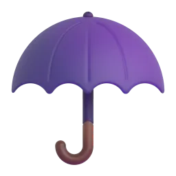
You can't remember the word "umbrella".
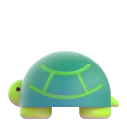
Your teacher speaks too fast.
You said "Tuesday", but you wanted to say "Thursday".
You don't know the word "errand".
Your answer is a mess and you want to try again.
b Complete the phrase. Tap the missing word.
Could you say that , please?
What's the for this?
It's a thing you for cooking.
How can I it?
Could you speak a bit ?
That's a good !
c Describe it! Which picture is it?
"It's a thing you use when it's raining." →
"You use it to make water hot for tea." →
"It's small. You keep your money and cards in it." →
"It wakes you up in the morning." →
"You use it in the bathroom twice a day." →
an umbrella
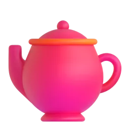
a kettlea wallet
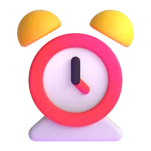
an alarm clocka toothbrush
d Your turn: describe one thing from your home without saying its name. Your teacher will guess!
My thing
e Speaking (on your phone): record a voice message. Describe three things in your kitchen without naming them. Use It's a thing you use for… · It's like… but… · You can find it in… Send it to your teacher.
Present Simple: everyday life
10 min at home
Homework, part 2 of 2: grammar. Read the short rule, then tap the answers. Press «Проверить» after each exercise.Часть 2: грамматика. Прочитайте правило и выбирайте ответы.
Grammar Bank1Apresent simple
I / you / we / they
he / she / it
+
I work from home.
She works from home.
−
I don't drink coffee.
He doesn't drink coffee.
?
Do you usually get up early?
Does she usually get up early?
Подсказка. Present Simple — привычки и то, что бывает обычно: usually, always, never, every day. С he / she / it добавляем -s: she works. Но после does / doesn't — без -s: Does she work? She doesn't work.
a Tap the correct word.
My sister in Kazan.
you usually drink tea in the morning?
My husband like coffee.
What time your son get up?
I work on Saturdays.
He TV every evening.
We sleep in on weekdays.
b Build the questions from our warm-up. Tap the words in order.
cTry it! We will learn this in the next lesson. Habit (usually) or right now? Just choose — mistakes are OK!
Попробуйте угадать — по вашим ответам преподаватель поймёт, что объяснить на уроке. Здесь нет кнопки «Показать ответы».
Look! It .
I usually green tea.
Sorry, I can't talk now. I .
My brother in a bank. He likes his job.
d Two truths and a lie: write three sentences about you. Two are true, one is a lie. Your teacher will guess in the next lesson!
Sentence 1
Sentence 2
Sentence 3
Готово? Отправьте ответы преподавателю
Откроется окно «Поделиться»: выберите мессенджер и отправьте ссылку преподавателю. Ответы зашифрованы, открыть их может только преподаватель.
IRIS SCHOOL · Ксения
What Makes a Good Life?
A real news interview with the director of the longest study of happiness ever made. Then we take the grammar from it and make it clear, step by step.
Intermediate+Authentic videoPresent Perfect vs Past Simple20 min homework + 60 min lesson
Before the lesson: homework
20 min at home
Do this at home before our lesson. Your answers help your teacher plan the lesson for you, so don't look anything up: it's fine to make mistakes! At the end, press «Отправить преподавателю».
1. Learn the new words
Tap a card to see the meaning. Save the words you want to remember to your dictionary.
2. Match the word and the meaning
to bicker →
loneliness →
to count on someone →
to stay sharp →
a study →
high-conflict →
social connections →
to track someone's life →
3. What do you already know?
Choose the correct form. Don't worry if you're not sure: this shows your teacher what to explain in the lesson.
I in this city since 2015.
We at university ten years ago.
to a concert alone?
My parents married for 30 years. They are very happy.
I my cousin since the summer.
Last year my best friend to another country.
Look! I my homework.
When learning English?
4. About you
Answer in full sentences (2–3 sentences each).
Who is the person you have known the longest? How long have you known them?
Where and when did you meet this person?
What makes your life good right now?
5. Your question
Is there anything about Present Perfect and Past Simple that confuses you? Write it in Russian or English.
Готово? Отправьте ответы преподавателю
Откроется окно «Поделиться»: выберите мессенджер и отправьте сообщение преподавателю. Ответы зашифрованы, открыть их может только преподаватель.
Warm-up: What makes people happy?
5 min
A survey asked young adults about their most important life goals. Over 80% said one of their main goals was to get rich. About 50% said another big goal was to become famous.
Rank these from 1 (most important for a happy life) to 7. Explain your choice and ask your teacher: "What about you?"
moneyfamehealtha good careerfamilyfriendsfreedom
For me, … is the most important because…I'd put … at the bottom because…It depends on…
Words from your homework
5 min
Do you remember the words from your homework? Complete the sentences.
My grandmother is 90, but her memory is still .
Scientists have these people's lives for decades.
When I have a problem, I can always my sister.
My parents about who forgot to buy bread, but they are very happy together.
After he moved to a new city, he suffered from .
Use them
Tell your teacher about a real person in your life. Use at least two new words.
I can always count on…We sometimes bicker about…Her memory is still sharp…We stay in touch because…
Video: the happiness study in 6 minutes
14 min
"Researchers find strong relationships protect long-term health and happiness"PBS NewsHour · interview with Robert Waldinger, director of the Harvard study · about 6 minutes
What do you think matters most for a long and healthy life: money, fame, exercise or relationships? Make a guess.
First viewing: the main idea
Watch without subtitles. Only answer this question.
What is the main finding of the study?
Second viewing: details
Watch again. You can turn on English subtitles.
1. Who is Robert Waldinger?
2. When did the study begin?
3. According to the study, what matters more for long-term happiness than money or fame?
4. Write down one piece of advice Waldinger gives about relationships.
After watching: retell it in one minute
Imagine your teacher hasn't seen the video. Explain the study and its main message.
The study has followed…They have found that…The main message is…What surprised me was…
Present Perfect or Past Simple?
10 min
Step 1. Notice. Look at two sentences about the study.
A. The researchers have followed these people since 1938. B. The study started in 1938.
1. Sentence A: is the study still going on now?
2. Sentence B: do we know exactly when it happened?
3. "I've known Anna for ten years." Do I still know Anna?
4. "I lived in Kazan for five years." Do I live in Kazan now?
Step 2. Check the rule.
Past Simple: finished time
in 1938NOW
V2 / V-ed · did you…?
When? We know or ask about the time: The study started in 1938.
Stories and details: We met at university.
yesterday, last year, in 2015, ago, when I was a child
Present Perfect: past + now
1938NOW
have / has + V3
From the past until now: The study has followed them since 1938.
Life experience, no exact time: I've been to Italy.
Result now: I've lost my keys!
ever, never, already, yet, just, for, since
Подсказка. В русском одно прошедшее время, поэтому спросите себя: важно, КОГДА это было (есть «вчера», «в 2015», «неделю назад»)? Тогда Past Simple. Важен опыт или результат к сегодняшнему дню, а точного времени нет? Тогда Present Perfect. Со словом ago Present Perfect не бывает.
Step 3. How real conversations work.
A: Have you ever been to Georgia? (experience: Present Perfect) B: Yes, I have! (short answer) A: Really? When did you go? (details: Past Simple) B: I went there two years ago. The food was amazing!
Step 4. Sort the time words.
yesterday →
ever →
two days ago →
already →
in 2019 →
since Monday →
when I was a child →
yet →
Practice
7 min
Choose the correct form. Then say each sentence out loud.
The researchers these men since 1938.
The study in 1938.
I my best friend for twenty years.
We in Sochi last summer.
alone?
She her job two months ago.
Oh no! I my phone. I can't find it anywhere!
When your best friend?
Let's talk
14 min
1. "Have you ever…?" chain
Ask a Have you ever…? question. If the answer is "yes", ask two follow-up questions in Past Simple: When…? Where…? Who with? What was it like? Then your teacher asks you.
Press the button to start
Have you ever lost touch with a good friend?
Have you ever made a friend online?
Have you ever lived in another city?
Have you ever helped a stranger?
Have you ever had a big argument with a friend and made up?
Have you ever done something really brave?
Have you ever met someone famous?
Have you ever changed your mind about something important?
2. Role-play: The happiness interview
Your card. You are a researcher from the Harvard study. Interview the participant (your teacher). Start with Present Perfect, then ask for details in Past Simple.
How long have you lived in…?
Have you ever…? → When did you…? What happened?
Who has influenced you the most? How did you meet?
What's the best thing that has happened to you this year?
Then swap: your teacher interviews you.
3. Fluency: A person who has made my life better
Tell the same story three times. Each time you have less time: speak faster and add details. Use your homework answers to help you.
Extra, if you have time: Agree or disagree?
Press the button!
Money can buy happiness.
It's better to have a few close friends than many friends.
Social media has made people lonelier.
Arguing is healthy in a relationship.
Happy people live longer.
I totally agree, because…I'm not sure about that…It depends on…I see your point, but…
Feedback
3 min
Your teacher writes here: your best phrases and the mistakes to work on.
Great phrases you used
Let's fix
Today I can…
understand the main idea of a short interview
choose between Present Perfect and Past Simple
ask "Have you ever…?" and follow-up questions
Homework after the lesson
2 min
Practise: do the exercise below.
Write 100–120 words in the box at the bottom: "A person who has made my life better". Use Present Perfect for the connection to now (I've known her for… / She has always…) and Past Simple for the story (We met in… / She helped me when…).
Watch Waldinger's TED Talk "What makes a good life?" (13 min) with English subtitles. Write down 5 phrases you like.
Send your answers to your teacher with the button below.
I (never / try) sushi.
My grandparents (get) married in 1975.
(you / finish) the report yet?
He (live) here since 2020.
Last weekend we (go) to a concert.
I (just / see) your message.
How long (you / know) Anna?
She (call) me an hour ago.
Готово? Отправьте ответы преподавателю
Откроется окно «Поделиться»: выберите мессенджер и отправьте сообщение преподавателю. Ответы зашифрованы, открыть их может только преподаватель.
extra practice
10 min
What to do
Build the sentences: tap the words in the right order. Made a mistake? Press «↺ Заново».
Find the mistake in each sentence and write the correct sentence.
Press «Проверить» after each exercise.
1. Build the sentence
2. Find the mistake
I have seen him yesterday.
We know each other since 2010.
Did you ever try sushi?
She has left two hours ago.
IRIS SCHOOL · Паша
Inside the Procrastinator's Mind
A short animated video about why we put things off, even when it makes us feel bad. Then real vs imaginary situations with conditionals.
Intermediate+Authentic videoConditionals 0 · 1 · 260 min
Warm-up: Are you a procrastinator?
6 min
Answer honestly, then compare with your teacher.
What's the last thing you put off? Did you finally do it?
When you have a deadline, do you start early or at the last minute?
What's your favourite way to waste time? (YouTube, scrolling, cleaning the kitchen…)
On a scale of 1 to 10, how much of a procrastinator are you?
Words for the video
8 min
Tap a card to see the meaning.
Complete the sentences
I always boring tasks like paperwork.
I had an exam in the morning, so I pulled an .
The coffee finally and I started working.
Missing that deadline was a real . Now I plan my week.
I wanted to learn Spanish for years, but I never it.
Video: Why you procrastinate
12 min
"Why you procrastinate even when it feels bad"TED-Ed animation · about 5 minutes · clear and not too fast, use English subtitles if needed
Doesn't open? Watch it on YouTube: youtube.com/watch?v=FWTNMzK9vG4
Before you watch: predict
Why do people procrastinate? Is it laziness, bad time management or emotions? Say what you think, then watch and check.
While you watch
1. According to the video, procrastination is mainly a problem of…
2. Why does our brain want to avoid some tasks?
3. What happens when we put a task off?
4. Which tip is in the video?
5. How should we treat ourselves after we procrastinate?
Explain it to me
Your teacher hasn't seen the video. In 90 seconds, explain why people procrastinate and two tips to stop.
The video says that…Our brain sees the task as…One tip is to…I think the best tip is…
Real or imaginary? Conditionals
8 min
Zero: always true
If + present, present
If a task feels scary, our brain wants to avoid it.
facts, rules, habits (if = when)
First: real future
If + present, will + V
If I finish this today, I'll go out tonight.
a real possibility. Also unless (= if not), when, as soon as + present
Second: imaginary
If + past, would + V
If I didn't procrastinate, I would have much more free time.
unreal now or unlikely future. If I were you, I'd… = advice
The golden rule: no will and no would in the if-part!
✗ If I will have time, I will call you. ✓ If I have time, I'll call you.
✗ If I would be rich… ✓ If I were rich…
Подсказка. Русское «если бы» почти всегда переводится вторым типом: «Если бы у меня было время…» = If I had time, I would… Обычное «если» о реальном будущем — первый тип, но после if ставим настоящее время, хотя по-русски там будущее: «Если я закончу…» = If I finish…
Practice
10 min
1. Choose the correct form
If I early, I'll call you.
If I more time, I would learn to play the guitar.
Ice if you heat it.
I won't go to the gym unless you with me.
If I were the boss, I let people work from home.
What you do if you won a million dollars?
As soon as the deadline close, I start to panic.
If she , she'll miss the train.
2. Put the verb in the correct form
If I (be) you, I'd start the project today.
If you (not / start) now, you'll be stressed tomorrow.
If we (live) by the sea, we would go swimming every day.
I (send) you the file as soon as I get home.
If I had a personal assistant, I (never / miss) a deadline.
If he (get) the job, he'll move to St Petersburg.
What would you do if your phone (disappear) for a week?
If you (heat) ice, it melts.
3. Beat procrastination: your plan
Write 3 real promises for this week (First Conditional) and 1 with unless.
If I finish … by Wednesday, I'll…If I put it off again, I'll…I won't … unless I…
Let's talk
18 min
1. Role-play: Productivity coach
Your card. You are a productivity coach. Your client (your teacher) has a procrastination problem. Ask questions to understand it, then give advice with conditionals.
What do you keep putting off? Why?
What happens if you don't do it?
If I were you, I'd…
If you start with…, you'll…
What would you do if you had no phone for a day?
Then swap: your teacher coaches you about something you really put off.
If I were you, I'd…If you…, you'll…Unless you…What would happen if…?Have you tried…?
2. Chain of consequences
Continue the chain: each answer starts with the end of the last one. Try to make at least five links!
"If I won a million roubles, I'd travel. If I travelled, I'd… If I…"
Press the button!
If I won a million roubles…
If I quit my job tomorrow…
If the internet disappeared for a week…
If I could live in any country…
If I didn't have to sleep…
If I start running every morning…
3. Mini-debate: "Deadlines are good for us"
You argue FOR, your teacher argues AGAINST. 90 seconds each, then swap sides.
4. Questions
Press the button to start
What do you usually put off? Why?
What kind of tasks make you worried, so you put them off?
If you had no deadlines at all, what would happen to your work?
If you could add one hour to every day, what would you do with it?
What will you do this weekend if the weather is good?
Which tip from the video will you try this week?
If you could give your 15-year-old self one piece of advice about procrastination, what would it be?
What would you do if you didn't have to work?
Is some procrastination good? When?
Homework
2 min
Write 120–150 words: "What would my life be like if I never procrastinated?" Use at least 4 Second Conditional sentences and 2 First Conditional ones.
Watch Tim Urban's TED Talk "Inside the mind of a master procrastinator" (14 min). What does he say that the TED-Ed video doesn't?
Try it: follow your plan and tell me next lesson if it worked.
extra practice
10 min
What to do
Build the sentences: tap the words in the right order. Made a mistake? Press «↺ Заново».
Find the mistake in each sentence and write the correct sentence.
Press «Проверить» after each exercise.
1. Build the sentence
2. Find the mistake
If I will have time, I will call you.
If I would be rich, I would buy a boat.
If she doesn't hurry, she misses the train.
What you would do if you won the lottery?
⭐ 0
IRIS SCHOOL · Милана
Phone Off, Life On?
Social media, a week without a phone and a big Error Detective game. Every correct answer gives you 10 stars!
B1Revision gamePast Simple · comparatives · Present Perfect60 min
This or that?
5 min
Choose fast and explain in one sentence: "I prefer… because…"
Press the button!
TikTok or YouTube?
Texting or calling?
Photos or videos?
Series or films?
Early bird or night owl?
Sneakers or boots?
Summer holidays or New Year holidays?
Pizza or sushi?
Cats or dogs?
Big party or movie night with one friend?
Social media words
8 min
Tap a card to flip it.
Which word?
Her dance video . It has 2 million views!
My phone says my was 6 hours yesterday. That's too much!
I didn't go to the party, and now I have serious .
She has 10,000 on Instagram.
I always my phone during exams.
Reading: My Week Without a Phone
10 min
My Week Without a Phone
by Alex, 15
Last month my school organised a challenge: no smartphones for seven days. At first I thought it was a terrible idea. I usually spend about five hours a day on my phone, mostly scrolling TikTok and texting my friends.
Day 1 was awful. I kept reaching for my pocket, and I felt like I was missing everything. Classic FOMO! On Day 2 I got bored, so I took out my old guitar and started practising again. By Day 4 I was sleeping better and I wasn't as tired in class.
The strangest thing? I talked to my family much more. My dad and I even cooked dinner together, and it was actually fun.
Of course, it wasn't perfect. I missed a party because nobody could text me about it! But I've learned something important: my phone is useful, but it shouldn't control my day. Now I turn off notifications after 9 p.m., and I've never felt better.
1. What did Alex think about the challenge at first?
2. What did Alex do on Day 2?
3. What changed by Day 4?
4. Why did Alex miss a party?
5. What does Alex do now?
Bonus: find 6 irregular verbs in Past Simple in the text. (thought, …)
Verb race
5 min
Write the Past Simple. Go as fast as you can! Press Enter or Check.
go →
think →
buy →
see →
take →
write →
feel →
teach →
catch →
bring →
choose →
fall →
forget →
understand →
Error Detective
15 min
Every sentence has one mistake. Find it and write the whole sentence correctly.
Clue 1: Comparatives
popular → more popular than good → better (not more better) bad → worse
Clue 2: Questions & negatives
Do / Does / Did + base verb She doesn't like. Did you see?
Clue 3: Present Perfect
finished time (last week, ago) → Past Simple for + period, since + start point
Yesterday I goed to the cinema with my friends.
TikTok is more popular that Facebook.
My sister don't like horror films.
I am agree with you.
Did you saw my new post?
This song is more better than the old one.
I have seen this film last week.
She has 14 years.
I have lived in this city since five years.
The people in my class is very friendly.
He is the most tallest boy in our school.
We was at the concert last Saturday.
Let\'s talk!
20 min
1. Taboo!
Describe the word, but don't say the word or the "forbidden" words. Your teacher guesses. Then swap!
It's something you…It's a person who…When you…, you get…It's like… but…
2. Talk show: "Phone Life"
You are the talk show host! Your teacher is a famous guest. Ask at least 6 questions and react to the answers.
When did you get your first phone?
Have you ever lost your phone? What happened?
What app do you use the most?
What did people do before smartphones?
Could you live without your phone for a week?
Then swap: your teacher is the host and you are the star.
Welcome to the show!Wow, really?That's so cool!Tell us more!Thank you for coming!
3. Just a minute!
Talk about the topic for one minute without stopping. Don't worry about mistakes!
Press the button!
My favourite app
The best day of my summer
My dream holiday
A blogger or singer I like
School: the best and the worst things
My perfect weekend
A film or series I watched recently
4. Mini debate: Should phones be banned at school?
First, think of 2 reasons for and 2 reasons against. Then choose your side and convince your teacher!
2 minutes to prepare
Giving your opinion
In my opinion…I think that…I strongly believe…The main reason is…
Agreeing and disagreeing
I agree with you.That's true, but…I don't think so, because…Maybe, but what about…?
Would you rather…?
Press the button!
Would you rather lose your phone for a month or lose your voice for a week?
Would you rather have 1 million followers or 3 real best friends?
Would you rather only text or only call for a year?
Would you rather go viral for something embarrassing or never go viral at all?
Would you rather live without music or without films?
Would you rather be a famous YouTuber or a famous singer?
Homework
2 min
Mini-project: invent your own challenge for your class (like "a week without a phone"). Write 80–100 words: what is the challenge, what are the rules, why is it a good idea?
Or record a 1-minute video review of your favourite app in English (like a TikTok review!).
Verb race at home: learn these 14 verbs, there'll be a speed test next lesson!
extra practice
10 min
What to do
Build the sentences: tap the words in the right order. Made a mistake? Press «↺ Заново».
Find the mistake in each sentence and write the correct sentence.
Press «Проверить» after each exercise.
1. Build the sentence
2. Find the mistake
My brother have got a new phone.
I didn't went to school yesterday.
This is the most good song ever!
Do she play the guitar?
IRIS SCHOOL · Саша
Travel Stories
Trips, little disasters and the best moments. Today you learn to tell a story in English like a pro.
Pre-Intermediate → IntermediatePast Simple vs Past Continuous60 min
Warm-up: Guess the country
6 min
Look at the emojis and write the country.
🗼 🥐 🧀 →
🍣 🗻 🌸 →
🍕 🛵 🏛️ →
🦘 🏄 🐨 →
🌮 🌵 🪅 →
🐪 🏜️ 🔺 →
Quick questions
Which of these countries have you visited? Which do you want to visit?
Beach or mountains? Plane or train?
Where did you go on your last holiday?
Travel words
8 min
Tap a card to see the meaning.
Complete the sentences
We were late and we our flight.
I always my suitcase the night before the trip.
I bought a magnet as a .
The train was because of the snow.
We didn't have a map, so we got .
She lives , in Spain.
Reading: The Worst (and Best) Trip
10 min
The Worst (and Best) Trip of My Life
a travel story by Kate
Last summer my friend Anya and I flew to Rome. Everything went wrong from the start. While we were waiting at the airport, they announced that our flight was delayed by five hours! We finally arrived at midnight. When we got to the hotel, the receptionist was sleeping, and he wasn't very happy to see us.
The next day we decided to explore the city without a map. Of course, we got lost. It was raining, and we were walking through tiny streets when an old man stopped us. "Are you lost?" he asked with a smile. He didn't speak much English, but he took us to a small family restaurant. While we were eating the best pasta of our lives, his granddaughter was playing the accordion.
We missed half of the sightseeing on our list, but that evening was the best part of the trip. Sometimes the best moments happen when you don't plan them.
True or false?
1. Their flight was delayed.
2. The receptionist was waiting for them with a smile.
3. They had a map.
4. It was sunny when they got lost.
5. An old man helped them.
6. They saw everything on their list.
Look at the story again. Find verbs with was/were + -ing. What were people doing?
Past Simple or Past Continuous?
8 min
we were waiting… (long)they announced (short)
Past Continuous: the background
was / were + V-ing
an action in progress: We were walking through tiny streets…
the "scene" of a story: It was raining.
often after while
Past Simple: the events
V2 / V-ed
short, finished actions: An old man stopped us.
one action after another: We arrived, went to the hotel and slept.
often after when
I / he / she / it
you / we / they
+
I was sleeping
We were sleeping
−
She wasn't sleeping
They weren't sleeping
?
Was he sleeping?
Were you sleeping?
Story formula:I was ___ing when something happened. / While I was ___ing, something happened.
Подсказка. Past Continuous отвечает на вопрос «что делал?» (процесс, фон). Past Simple отвечает на вопрос «что сделал?» (короткое действие, которое прервало процесс). «Я шла по улице, когда встретила друга» = I was walking down the street when I met a friend.
Practice
10 min
1. Choose the correct form
I TV when you called.
While they were walking, it to rain.
What at 8 p.m. yesterday?
She a souvenir and left the shop.
We dinner when the lights went out.
He the bus this morning.
2. Put the verb in the correct form
When I (arrive) at the airport, my friends were waiting for me.
It (snow) when we left the hotel.
While I (pack) my bag, I found my old passport.
They (not / sleep) when I got home.
I (lose) my phone while I was shopping.
What (you / do) when the plane landed?
3. Finish the story starters
Press the button and finish the sentence with your own idea.
Press the button!
I was sitting on the train when…
While we were swimming in the sea…
It was raining and I was looking for my hotel when…
I was taking a selfie when…
While I was waiting for my luggage…
We were having dinner in a little café when…
Tell me your travel story
20 min
1. Guess my trip
Your teacher thinks of a real trip. Ask yes/no questions in the past to find out where, when and what happened. Then swap!
Did you go by plane?Was it hot?Were you travelling with friends?Did anything go wrong?Was it in Europe?
2. Role-play: At the hotel
Your card. It's midnight. You arrive at your hotel after a long delay. You booked a double room with a sea view. You're tired and hungry. Ask the receptionist for help and stay polite!
I have a reservation under the name…I booked…, but…Is there any way…?Could you…?That's fine, thank you.
3. Role-play: Lost luggage
Your card. Your bag didn't arrive. Go to the airline desk. Explain what happened ("I was waiting at the carousel when…"), describe your bag and what's inside, and give your hotel address.
4. Tell your story three times
Use the plan below. Tell your travel story three times: each time faster and with more details.
Think about a real trip: the best, the funniest or the worst. Use the plan and the linking words.
Plan
When and where did you go? Who with?
What was the weather like? What were you doing?
What happened? (was …ing when…)
How did you feel?
How did it end?
Linking words
First,Then,After that,Suddenly,While…When…In the end,
Write your travel story, 80–100 words. Use at least 3 Past Continuous verbs, 5 Past Simple verbs and 3 linking words.
Learn the 9 travel words.
Bonus: find a photo from one of your trips and prepare to describe it next lesson: "In this photo I was…"
extra practice
10 min
What to do
Build the sentences: tap the words in the right order. Made a mistake? Press «↺ Заново».
Find the mistake in each sentence and write the correct sentence.
Press «Проверить» after each exercise.
1. Build the sentence
2. Find the mistake
I was walk to the station.
When I was arriving, they were waiting for me.
They was sleeping when I got home.
I was see a bear in the forest.
IRIS SCHOOL · Захар и Михаил
Can Machines Think?
A short animated video about the Turing test, then AI, technology and the future: future forms for predictions, an exam-style discussion and a real debate — with lots of talking after every exercise.
B1+ → B2Authentic videoFuture Continuous & Future PerfectB2 First speakingDebate75–90 min
Before the lesson: homework
20–25 min at home
What to do
Do this at home before the lesson. Don't look anything up: mistakes are fine, they show your teacher what to focus on.
Learn the eight words from the video, then match them with their meanings.
Do the quick test on future forms. Press «Проверить» once and leave your answers as they are.
Answer the questions about your work in IT and explain a chatbot in simple words.
Press «Отправить преподавателю» at the bottom and send the link to your teacher.
1. Words from the video
These words are in the video we will watch in the lesson. Tap a card to see the meaning and an example. Save the words you want to keep.
2. Match the word and the meaning
to pass for →
to fool →
a judge →
to imitate →
a persona →
to claim →
a prediction →
convincing →
3. What do you already know?
Choose the correct form. Not sure? Choose what sounds right: this is a test before the teaching, so your teacher can see what to explain.
This time tomorrow I a code review.
By the end of the sprint, we all the critical bugs.
Don't message me at 3 p.m. — I in a meeting.
By 2030, AI most routine testing.
the test server tonight? I need to restart it.
Our new app be popular — everyone needs it!
AI replace programmers completely in the next five years.
By the time the client calls, we the release.
4. You and technology
Answer in full sentences, two or three sentences each.
What do you do in IT? Describe your job or your current project.
How do you use AI tools (ChatGPT, Copilot and others) in your work or studies?
Which part of your work will AI have automated by 2030? What will people still be doing?
5. Explain it simply
Your grandmother asks: "What is a chatbot, and how does it answer my questions?" Explain in three or four simple sentences, with no technical words. This is harder than it sounds!
Your explanation
6. For the lesson
Which tech topic would you like to discuss in the lesson?
Anything about future forms that confuses you? Write in Russian or English.
Готово? Отправьте ответы преподавателю
Откроется окно «Поделиться»: выберите мессенджер и отправьте ссылку преподавателю. Ответы зашифрованы, открыть их может только преподаватель.
Warm-up: You and technology
7 min
What to do
Read the lesson goals: this is what you will be able to do by the end.
Read the quote. Do you agree? Explain why in two or three sentences.
Press the button and answer the question. Your partner asks one follow-up question.
Talk about it: discuss the questions in the box.
By the end of this lesson I can…
make predictions about technology and say how sure I am
understand the main idea and key details of a short authentic video
explain an idea from the video to someone who has not seen it
discuss a question with a partner, agree, disagree and reach a decision
build an argument and answer the other side's arguments
"The real question is not whether machines think but whether men do."B. F. Skinner, psychologist
Press the button to start
Which app couldn't you live without? Why?
What technology did you use at ten that nobody uses now?
Which piece of technology is overrated?
Have you ever been fooled by a fake photo or video online?
Do you use AI chatbots? What for?
What job would you never give to a robot?
Talk about it
Compare your homework: how do you each use AI tools at work? Who uses them more?
What does the quote mean in your own words?
Is technology making people think less, or just think differently?
Which is more dangerous: machines that think like people, or people who stop thinking?
Find one thing you both think about technology in the same way, and one thing you disagree about.
Give a reason and an example. Then ask your partner a follow-up question: "Why?", "Can you give an example?", "What about you?"
Vocabulary: technology and AI
12 min
What to do
Tap each card to see the meaning and an example. Save the words you want to keep.
Match the words with their meanings and press «Проверить». Then talk about the questions.
Words that go together: choose the right word for each sentence.
Where is the stress? Choose and say each word out loud.
Use them: answer the questions with the new words.
1. Match the word and the meaning
to automate →
an algorithm →
obsolete →
a breakthrough →
to rely on →
a double-edged sword →
cutting-edge →
privacy →
Talk about it
Name something in your home that will be obsolete in ten years.
What do you rely on most: your phone, your memory or other people?
Which technology is a double-edged sword for you personally?
Give a reason and an example. Then ask your partner a follow-up question: "Why?", "Can you give an example?", "What about you?"
2. Words that go together
In English some words like to go together. Learn them as one chunk: a major breakthrough, rely heavily on, become obsolete, raise concerns.
It was a major in medicine.
We rely on our phones.
Typewriters have obsolete.
The new app has privacy concerns.
Many factory jobs are now fully .
Nobody knows how the algorithm its decisions.
Talk about it
What was the biggest breakthrough of the last twenty years? Why?
Which apps raise the biggest privacy concerns for you? Do you still use them?
Which jobs will be fully automated first? Which never will?
Give a reason and an example. Then ask your partner a follow-up question: "Why?", "Can you give an example?", "What about you?"
3. Where is the stress?
technology →
algorithm →
breakthrough →
automate →
artificial →
Talk about it
Use three of these words in sentences about your own life. Your partner listens: is the stress right?
Say each sentence out loud. Then swap.
4. Use them
Press the button to start
Which jobs will be automated first, do you think?
What do you rely on technology for every day?
Which technology will be obsolete in ten years?
What was the biggest tech breakthrough of your lifetime?
Why is social media a double-edged sword?
How much do you care about your privacy online?
Video: The Turing test
18 min
What to do
Before watching: write three questions you would ask to find out whether you are chatting with a human or a bot. Discuss them.
First viewing: watch without subtitles and answer only the main question. Talk about it.
Second viewing: answer the detail questions. You can turn on English subtitles. Talk about it.
Explain it to a friend: retell the main idea of the video in your own words.
"The Turing test: Can a computer pass for a human?"Alex Gendler · TED-Ed animation · about 5 minutes
Read your questions to each other. Whose question would catch a bot faster? Why?
Have you ever talked to a bot without realising it? How did you find out?
What do you think the video will say about the test?
Give a reason and an example. Then ask your partner a follow-up question: "Why?", "Can you give an example?", "What about you?"
2. First viewing: the main idea
What does the Turing test check?
Talk about it
Was your guess about the video right?
Is the Turing test a good test of intelligence? What would you test instead?
Is talking like a human the same as thinking like a human?
Give a reason and an example. Then ask your partner a follow-up question: "Why?", "Can you give an example?", "What about you?"
3. Second viewing: details
1. How does the test work?
2. What did Turing predict?
3. Was his prediction right?
4. What was ELIZA?
5. Who did the chatbot Eugene Goostman pretend to be?
6. Why did it use this persona?
Talk about it
Why do you think Turing's prediction was too optimistic?
Was it fair for Eugene Goostman to pretend to be a 13-year-old? Is it cheating?
Today's chatbots would probably pass the test. Does that mean they think?
Should companies always tell us when we are talking to an AI?
Give a reason and an example. Then ask your partner a follow-up question: "Why?", "Can you give an example?", "What about you?"
4. Explain it to a friend
Your friend hasn't seen the video. Write three key points, then explain the video in your own words in four or five sentences. Your partner plays the friend and asks two questions.
Key point 1
Key point 2
Key point 3
Basically, the idea is that…In other words…For example, …What surprised me was…So the main point is…
Talk about it
Was it easy to explain? What did you have to make simpler?
Friend: what else would you like to know about the test?
Would you show this video to your friends? Why or why not?
Give a reason and an example. Then ask your partner a follow-up question: "Why?", "Can you give an example?", "What about you?"
Talking about the future
10 min
What to do
Read the two predictions and answer the questions about them.
Read the rule and the examples. Say the examples out loud, using the short forms.
Sort the phrases on the probability scale and press «Проверить».
Talk about it: answer the questions using the new forms.
A. This time next year, I'll be studying at university. B. By 2035, AI will have replaced many office jobs.
1. Sentence A: will the studying be in progress at that moment next year?
2. Sentence B: will the replacing be finished before 2035?
3. "By the time you read this, I will have left." When do I leave?
Future Continuous
will be + V-ing
an action in progress at a moment in the future: This time tomorrow I'll be flying to Dubai.
polite questions about plans: Will you be using the car tonight?
Future Perfect
will have + V3
finished before a moment in the future: By 2030, I'll have graduated.
by + time · by the time + present: By the time we arrive, the film will have started.
Say it naturally
In speech we use short forms and the small words are weak: I'll be studying → /aɪl bi/ · I'll have finished → /aɪl əv/ — "have" sounds like "of". Say the examples above quickly, like in a real conversation.
How sure are you?
certain: will definitely · almost certain: is bound to, will probably, is likely to · quite possible: may well · possible: might, could · probably not: is unlikely to, probably won't · impossible: definitely won't
Подсказка. Future Continuous — «буду делать» в конкретный момент будущего (процесс). Future Perfect — «уже сделаю» к моменту в будущем (результат). Слово by («к») почти всегда зовёт Future Perfect.
Sort the phrases
AI is bound to change medicine. →
Robots may well deliver our food. →
People are unlikely to stop using phones. →
Prices will definitely go up. →
Flying cars might appear in cities. →
Books probably won't disappear. →
Talk about it
What will you be doing this time next year?
What will you have achieved by the time you are 25?
Name one thing that is bound to happen in technology in the next five years, and one thing that is unlikely to happen. Does your partner agree?
Give a reason and an example. Then ask your partner a follow-up question: "Why?", "Can you give an example?", "What about you?"
Practice
10 min
What to do
Choose the correct form and press «Проверить». Then talk about the questions.
Complete the second sentence so it means the same as the first. Then talk about the questions.
Write three predictions about your own life in 2035 and say them to your partner. Your partner reacts and asks questions.
1. Choose the correct form
This time next week, we around Georgia.
By the end of this year, I enough money for a new laptop.
Don't call me at 8 — I at the gym.
By 2040, scientists cures for many diseases.
your laptop tonight? Can I borrow it?
By the time we arrive, the film .
Talk about it
Where will you be and what will you be doing at 9 p.m. tonight? And this time next week?
Which of the sentences in the exercise do you think will really come true by 2040?
What will you have done by the end of this year?
Give a reason and an example. Then ask your partner a follow-up question: "Why?", "Can you give an example?", "What about you?"
2. Same meaning, different words
"I'm almost sure AI will change medicine." AI is change medicine.
"It's quite possible that robots will deliver our food." Robots may deliver our food.
"I don't think people will stop using phones." People are stop using phones.
"I'll finish university in 2029." By 2030, I university.
"My exam starts at 8:30 tomorrow and lasts three hours." At 9 a.m. tomorrow, I an exam.
Talk about it
Do you agree with the five sentences? Change two of them so they are true for you.
Robots delivering food: would you like that? Why or why not?
Is it a good idea to plan your life ten years ahead, or is it better to go with the flow?
Give a reason and an example. Then ask your partner a follow-up question: "Why?", "Can you give an example?", "What about you?"
3. Your life in 2035
Prediction 1
Prediction 2
Prediction 3
By 2035, I will have…In ten years, I'll be living…I'm bound to…I may well…I'm unlikely to…
Talk about it
Whose predictions are more optimistic?
Which of your partner's predictions is most likely to come true? Which is least likely?
How will technology help you to make your predictions come true?
React to your partner: "Really? Why do you think so?", "That's bound to happen!", "I doubt it, because…"
Discussion: AI in our lives
15 min
What to do
Part 1. Read the question and the five ideas. Talk together about each idea. There is no timer — just try to discuss every idea.
Then decide together: which area will AI change the most? Write your decision.
Part 2. Press the button and discuss the questions. Give longer answers with reasons and examples.
Talk about it: think about how you discussed.
This is the format of the speaking exam B2 First (Cambridge), Parts 3 and 4: you discuss with a partner, not with the examiner.
1. Talk together
How might artificial intelligence change these areas of our lives?
educationworkhealthfriendshipsentertainment
Keeping the conversation going
Shall we start with…?What do you think about…?Let's move on to…We haven't talked about… yet.
Agreeing and disagreeing
Exactly! And what's more…I see your point, but…I'm not so sure about that.That's true, although…
2. Decide together
Which area will AI change the most? You don't have to agree, but try to reach a decision.
So, which one shall we choose?I think we both agree that…Let's go for…, then.We'll have to agree to disagree.
Our decision and why
Talk about it
Did you agree quickly or did you have to argue?
Which idea was the hardest to talk about? Why?
Did you both speak about the same amount? Who asked more questions?
In the exam, good partners invite each other to speak and react to each other's ideas.
3. Discussion questions
Press the button!
Some people say we rely too much on technology. Do you agree?
Would you trust a self-driving car with your life? Why?
Should AI be allowed to write school or university essays?
Is it OK for companies to use your data if the service is free?
Will people still learn foreign languages in 2040?
What are the advantages of learning with a human teacher rather than an app?
Would you trust an algorithm to choose a partner for you?
What will your phone be able to do in 2035?
Talk about it
Which question was the most interesting? Why?
Did your partner say anything that surprised you?
Which question would you like to ask your friends or family?
Give a reason and an example. Then ask your partner a follow-up question: "Why?", "Can you give an example?", "What about you?"
Debate
15 min
What to do
Choose a motion. One of you argues FOR, the other AGAINST.
Plan: write three arguments with an example for each. Check them: is it a fact or an opinion?
Debate: present your arguments, then argue freely. Use the debate moves. There is no timer.
Report: tell your teacher who was more convincing and why. Then talk about the questions.
1. Choose a motion
Press the button to choose a motion
"AI will create more jobs than it destroys."
"Children under 14 shouldn't have smartphones."
"Social media does more harm than good."
"Companies must always tell us when we are talking to an AI."
"Self-driving cars should be allowed everywhere."
2. Plan your arguments
Write three arguments and an example for each. Your teacher can see them.
Zakhar
Mikhail
Check your arguments Is it a fact or an opinion? · What is your evidence or example? · What will the other side say — and how will you answer?
3. Debate
Agree and add: "That's true, and what's more…"Challenge: "But what would happen if…?"Counter-example: "Take … for example."Ask for evidence: "How do you know that?"Concede a point: "Fair enough, but…"
Making your point
I'd argue that…The key point here is…The evidence suggests…Let's not forget that…
Challenging
I see where you're coming from, but…That's a fair point, however…That may be true, but it doesn't mean…What you're missing is…
Final word: sum up your position in one sentence about the future, e.g. "By 2040, AI will have…"
Talk about it
Which argument from the other side was the strongest?
Did anyone change their mind, even a little? Why?
Forget your role: what do you really think about the motion?
Which was easier to argue: FOR or AGAINST? Why?
Give a reason and an example. Then ask your partner a follow-up question: "Why?", "Can you give an example?", "What about you?"
4. Bonus, if you have time: startup pitch
Each of you invents an app or a gadget that solves a real problem. Present it. The others are investors: they ask two tough questions and decide whether to invest.
Pitching
Our app will…By 2030, it will have…Users are bound to…What makes it different is…
Investors
Who will be using it?How will you make money?What if a big company copies you?I'm in! / I'm out, because…
Talk about it
Would you really invest in your partner's idea? Why or why not?
Which problem in your life would you most like an app to solve?
Give a reason and an example. Then ask your partner a follow-up question: "Why?", "Can you give an example?", "What about you?"
Feedback and reflection
6 min
What to do
Listen to your teacher's feedback. Say each corrected sentence out loud.
Upgrade your English: your teacher writes a simple sentence you said; make it sound more advanced.
Check yourself: how well can you do each thing from the lesson goals?
Answer the two questions about your learning.
Great phrases you used
Let's fix
Upgrade your English
Example: "I think robots will do many jobs in the future." → "By 2040, robots are bound to have taken over many jobs."
Upgrade 1
Upgrade 2
Check yourself
I can make predictions about technology and say how sure I am.
I can understand the main idea and key details of a short authentic video.
I can explain an idea from the video to someone who has not seen it.
I can discuss a question with a partner, agree, disagree and reach a decision.
I can build an argument and answer the other side's arguments.
Think about your learning
What was the most useful thing in today's lesson?
What do you want to practise more next time?
Homework
3 min
What to do
Do the Turing test at home: ask an AI chatbot your three questions from the lesson. Write what happened.
Write an essay (140–190 words) in the box at the bottom of this page. This is the format of B2 First, Writing Part 1.
Press «Отправить преподавателю» and send the link to your teacher.
1. Your Turing test
Which chatbot did you test, and what did it answer?
Would it fool a judge? Why or why not?
2. Essay
In your English class you have been talking about technology. Now your teacher has asked you to write an essay. "Technology makes our lives easier, but not happier." Do you agree?
Notes — write about: 1. study and work · 2. friendships · 3. ……… (your own idea)
Use at least two future forms (Future Continuous or Future Perfect), three probability phrases and five words from today. Plan first: introduction → a paragraph for each note → your conclusion.
Готово? Отправьте ответы преподавателю
Откроется окно «Поделиться»: выберите мессенджер и отправьте сообщение преподавателю. Ответы зашифрованы, открыть их может только преподаватель.
extra practice
10 min
What to do
Build the sentences: tap the words in the right order. Made a mistake? Press «↺ Заново».
Find the mistake in each sentence and write the correct sentence.
Press «Проверить» after each exercise.
1. Build the sentence
Talk about it
Choose two sentences from the exercise and change them so they are true for you. Tell your partner.
What will you be doing this time tomorrow? And what will you have done by Friday?
Give a reason and an example. Then ask your partner a follow-up question.
2. Find the mistake
By 2030, I will graduate.
This time tomorrow I will lie on the beach.
AI is bound change medicine.
Robots will likely to deliver our food.
Talk about it
Which of these mistakes do you think Russian speakers make most often? Why?
Make your own sentence about technology with "bound to" and one about your plans with "will have". Does your partner agree?
Give a reason and an example. Then ask your partner a follow-up question.
IRIS SCHOOL · Марина · Урок 2
Tastes Like Home
Food, family recipes and memories. Talk about the dishes that tell your story and learn to say how things used to be.
“One cannot think well, love well, sleep well, if one has not dined well.”Virginia Woolf, A Room of One's Own
IntermediateFood & memoriesused toLots of speaking60 min
food and taste
14 min
In this lesson you will…
describe food and how it tastes
talk about a dish that is special to you
talk about past habits with used to
tell a short story about a food memory
a Look at the photos. Which dish would you love to eat right now? Why?
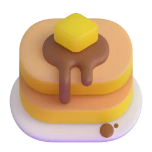
pancakessoup
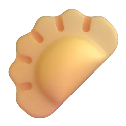
dumplingscakesaladpizza
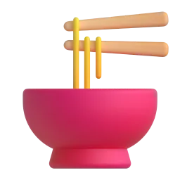
noodlespie
Talk about it
Which of these did you eat as a child? Who made it?
What did you have for breakfast today?
Do you prefer cooking at home or eating out?
Give a reason and an example. Then ask a follow-up question: "Why?", "What about you?"
b Go to the Vocabulary Bank. Tap each card to see the meaning, press 🔊 and repeat. Then complete the sentences.
Vocabulary Bank1BFood and taste
My mum's apple pie is my favourite food.
"Is this bread ?" — "Yes, my husband made it."
Can you give me the for this cake?
I can't stop eating chocolate. I have a sweet .
We cooked too much, so we had the next day.
We don't cook on Fridays — we .
c How does it taste? Look at the pictures and choose.
a lemon →
honey →
a chilli pepper →
a pretzel →
black coffee →
d Ask and answer with your teacher.
Talk about it
What is your comfort food?
Do you have a sweet tooth? What is your favourite treat?
Is there a family recipe that you know by heart?
What is the spiciest thing you have ever eaten?
Give a reason and an example. Then ask a follow-up question: "Why?", "What about you?"
Sunday at Grandma's
10 min
a Read the story quickly. What is it mainly about?
Sunday at Grandma'sA reader's story · about 180 words
When I was a child, we used to visit my grandmother every Sunday. She lived in a small house with a big garden, and the whole house used to smell of fresh bread. Grandma didn't use to buy cakes in shops — everything was homemade. In summer we used to pick strawberries in her garden, and she baked the most mouth-watering strawberry pie I have ever tasted.
I remember one Sunday very well. I was eight, and I tried to bake the pie myself. I forgot the sugar! Grandma tasted it, smiled and said, "Well, it's very… healthy." We laughed for hours.
My grandmother died many years ago, but I still have her recipe, written in her small, neat handwriting. Every summer I bake her strawberry pie with my daughter. It never tastes exactly the same, but it always tastes like home.
The story is mainly about…
b Read again and answer the questions.
1. How often did the family visit Grandma?
2. What did the house smell of?
3. What went wrong when she was eight?
4. What does she do every summer now?
c Talk about the questions.
Talk about it
Does this story remind you of anyone in your family?
Is there a smell that takes you back to your childhood?
Why do you think the pie "never tastes exactly the same"?
Give a reason and an example. Then ask a follow-up question: "Why?", "What about you?"
used to
10 min
a Look at the three sentences from the story and answer the questions.
A. We used to visit my grandmother every Sunday. B. Grandma didn't use to buy cakes in shops. C. I was eight, and I tried to bake the pie myself.
1. Sentence A: did they visit Grandma many times?
2. Sentence A: do they still visit her every Sunday?
3. Sentence C happened…
b Read the rules in the Grammar Bank. Then do the exercise.
Grammar Bank1Bused to
used to + verb
past habits and states that are not true now
+ I used to bake with my mum.
− We didn't use to eat out.
? Did you use to cook?
Past Simple
one finished action
Last Sunday I baked a pie.
In 2015 we went to Italy.
Подсказка.used to = «раньше (обычно) делала, а сейчас нет». В вопросе и отрицании пишем use to без -d: Did you use to…? I didn't use to…
When I was little, I milk every morning.
We a TV when I was a child.
cook with your grandmother?
Last Saturday we in a new Italian restaurant.
My dad pancakes every Sunday when we were kids.
In 2015 I to Italy and tried real pizza for the first time.
c Say the sentences. Then make your own with these words.
My favourite comfort food is chocolate cake.
I used to hate vegetables.
This chair is very comfortable.
Then and now
8 min
a Look at the pictures. Say true sentences about your childhood: I used to… / I didn't use to…
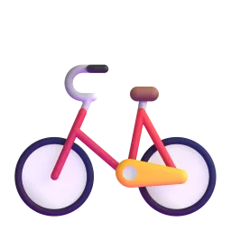
ride a bikeplay outsidewatch cartoonseat sweetshave music lessons
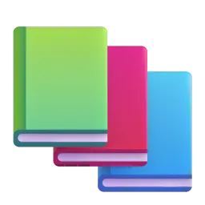
read a lotwrite letters
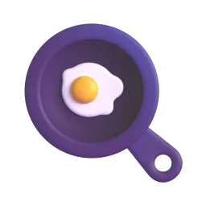
help in the kitchen
b Write three of your sentences.
Sentence 1
Sentence 2
Sentence 3
c Build the sentences. Tap the words in the right order.
d Ask your teacher Did you use to…? questions.
Talk about it
Ask your teacher: "Did you use to … when you were a child?"
What is different in children's lives today? Children used to…, but now they…
What did your family use to do at weekends?
Give a reason and an example. Then ask a follow-up question: "Why?", "What about you?"
A dish with a story
10 min
a You are a guest on the food podcast "Tastes Like Home". Prepare: make notes about a dish that is special for you.
Student Athe guest (you)
What is the dish?
Who used to make it? When did you use to eat it?
How does it taste and smell?
Why is it special for you?
It reminds me of…It smells of…It tastes a bit like…My mum used to…The secret ingredient is…
Student Bthe podcast host (teacher)
Welcome to "Tastes Like Home"! Today our guest is going to tell us about a very special dish…
Press the button for a podcast question
What is the best meal you have ever had?
What did your family use to eat on holidays?
What is a typical dish from your region?
Have you ever cooked for a lot of people? How did it go?
What food reminds you of a holiday?
Which dish would you like to learn to cook?
What is the strangest food you have ever tried?
b Record the podcast: tell your story for one or two minutes. The host asks questions.
c Swap: now you are the host. Interview your teacher.
Talk about it
Which of your teacher's answers surprised you?
Would you like to try your teacher's special dish? Why?
Give a reason and an example. Then ask a follow-up question: "Why?", "What about you?"
A dish with a story
3 min
a Write about your dish with a story (80–100 words) in the box at the bottom of this page. Use used to three times and five words from the Vocabulary Bank.
Plan: What is it? · Who used to make it? · When did you use to eat it? · How does it taste? · Why is it special?
b Record a voice message (1 minute) about this dish and send it to your teacher.
c Press «Отправить преподавателю» and send the link.
Готово? Отправьте ответы преподавателю
Откроется окно «Поделиться»: выберите мессенджер и отправьте ссылку преподавателю. Ответы зашифрованы, открыть их может только преподаватель.
Can you…?
4 min
a Listen to your teacher. Repeat the corrected sentences.
Great phrases you used
Let's fix
b Can you do these things? Tap your answer.
I can describe food and how it tastes.
I can talk about a dish that is special to me.
I can talk about past habits with used to.
I can tell a short story about a food memory.
extra practice
10 min
What to do
Build the sentences: tap the words in the right order. Made a mistake? Press «↺ Заново».
Find the mistake in each sentence and write the correct sentence.
Press «Проверить» after each exercise.
1. Build the sentence
2. Find the mistake
I use to bake every Sunday.
Did you used to cook?
I used to went there every summer.
Yesterday I used to cook pasta.
IRIS SCHOOL · Екатерина
If I Had a Year Off…
Dreams, life changes and new beginnings. Lots of new words, lots of talking — and the Second Conditional, step by step.
“Life is what happens to you while you're busy making other plans.”John Lennon, Beautiful Boy
B1Life changesSecond ConditionalLots of speaking60 min
life changes
14 min
In this lesson you will…
talk about dreams and life changes with new words
understand when we use the Second Conditional
make sentences like If I had more time, I would…
talk about imaginary situations for a long time without stopping
a Imagine you have a whole year with no work. Look at the pictures and choose two. Say why.
live on an island
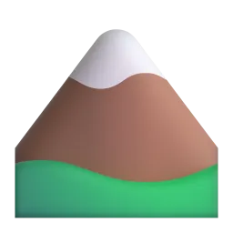
live in the mountains
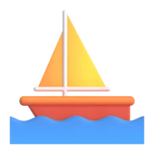
sail around the world
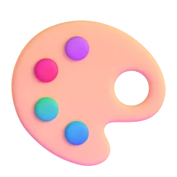
paintlearn the piano
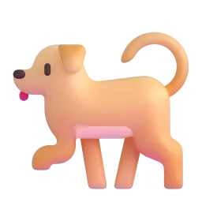
adopt a dogtravel in a camper vanbuild a house
Talk about it
Which two pictures did you choose? Why?
Which picture would be terrible for you? Why?
Do you know anyone who changed their life completely?
Give a reason and an example. Then ask a follow-up question: "Why?", "What about you?"
b Go to the Vocabulary Bank. Tap each card, press 🔊 and repeat. Then complete the sentences.
Vocabulary Bank1ALife changes
I'd love to travel more, but I can't it right now.
Every day is the same: home, work, home. I feel stuck in a .
After the children left home, she yoga and pottery.
Seeing Japan in spring is on my bucket .
He his job in the city and moved to the countryside.
Living by the sea was a dream come for them.
c Which phrase goes with the picture?
→
→
→
→
d Ask and answer with your teacher.
Talk about it
What would you put on your bucket list? Name three things.
Have you ever felt stuck in a rut? What helped?
What hobby would you like to take up?
What is something you can't afford now but would love to have?
Give a reason and an example. Then ask a follow-up question: "Why?", "What about you?"
They changed their lives
10 min
a Read about three people who changed their lives.
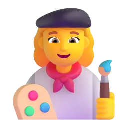
Olga, 46 an accountant from Kazan
For twenty years I was stuck in a rut: home, office, home. Last year I took a year off and moved to a small village by the sea in Montenegro. I took up painting, and now I sell my pictures to tourists. I don't know if I will go back.
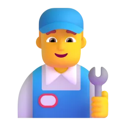
Igor, 52 an engineer
My wife and I always dreamed of travelling, but we never had time. Two years ago I gave up my job, we bought an old camper van and drove around Europe with our dog for ten months. It was a dream come true.
Svetlana, 44 a teacher
I didn't want to leave my job or my city. So I made a bucket list and I do one new thing every month: piano lessons, a cooking course, a parachute jump! I'm making the most of my life right here.
b Read again. Who…? Choose the name and press «Проверить».
…travelled with a pet? →
…changed her life without leaving home? →
…started a new hobby by the sea? →
…felt stuck in a rut? →
…gave up a job? →
…tries something new every month? →
c Talk about the questions.
Talk about it
Which person do you like most? Why?
Which change would be the hardest for you?
Do you have a bucket list? What is on it?
Is it better to change everything or to make small changes?
Give a reason and an example. Then ask a follow-up question: "Why?", "What about you?"
second conditional
12 min
a Real or imagined? Read the examples, then choose for each sentence.
Real, possible If it rains tomorrow, I'll stay at home. It can really happen.
Imagined If I lived by the sea, I'd swim every day. I don't live by the sea — I'm imagining.
If I have time tonight, I'll call you. →
If I had a year off, I'd travel around Asia. →
If I won a million, I'd buy a house by the sea. →
If you're tired, we'll stop. →
b Read the rules in the Grammar Bank. Remember: in the if-part there is no would.
Grammar Bank1Asecond conditional
IF + past formIf I hadlived · had · were · could
,
would ('d) + verbI would travelwould go · 'd buy · would be
Past form, but not past time! We talk about now or the future — something imagined.
❌ If I would have money, I would travel.
✅ If I had money, I would travel.
Подсказка. В русском «бы» стоит в обеих частях: «Если бы у меня были деньги, я бы путешествовала». В английском would («бы») — только в одной части, а после if — прошедшая форма: If I had… Части можно менять местами: I would travel if I had money. Для всех лиц можно were: If I were you…
Check: "If I had more money, I would buy a car." — Do I have a lot of money now?
c Build the sentences. Tap the words in the right order.
d Answer the questions with the full sentence.
Talk about it
What would you do if you had a year off?
Where would you live if you could live anywhere?
If you could learn any skill in one week, what would it be?
Start with the full formula: "If I had a year off, I would…". Then add a reason.
'd and would; sentence stress
6 min
a Listen and repeat. In speech, would is usually 'd — very short: I'd /aɪd/, she'd /ʃiːd/, we'd /wiːd/.
I'd travel.
She'd buy a house.
We'd live by the sea.
If I had more time, I'd learn Spanish.
b Listen carefully. Do you hear 'd? Press 🔊 and choose.
→
→
→
→
c Sentence stress. Say the sentences: the big words are strong, the small words are quick.
If I HAD more TIME, I'd LEARNSPANish.
WHAT would you DO if you WON a MILlion?
If I were YOU, I'd TAKE a YEAROFF.
Would you rather…?
10 min
a Would you rather…? Press the button, choose and explain: I'd rather… because if I…, I'd…
Press the button!
Would you rather live by the sea or in the mountains?
Would you rather speak five languages or play five instruments?
Would you rather have a year off now or retire five years earlier?
Would you rather travel in a camper van or on a cruise ship?
Would you rather live without your phone or without coffee for a month?
Would you rather be famous or very rich?
I'd rather… because…If I lived…, I'd…If I had to choose, I'd…Honestly, I wouldn't…
b What would you do? Press the button and answer the dilemma.
Press the button for a dilemma
What would you do if you found a wallet with 1,000 euros in the street?
What would you do if your best friend asked you to move abroad together?
What would you do if you could change one thing in your city?
What would you do if you were the boss of your company for one day?
What would you do if you had an extra hour every day?
What would you say if a famous person sat next to you on a plane?
Talk about it
Would your answer be different twenty years ago?
Ask your teacher the same question. Do you agree?
Give a reason and an example. Then ask a follow-up question: "Why?", "What about you?"
c Chain game. Take turns with your teacher. Each sentence starts with the end of the last one.
If I had a year off, I'd go to Italy. → If I went to Italy, I'd learn to cook pasta. → If I learned to cook pasta, I'd open a little café. → If I opened a café…
Can I have a year off?
10 min
a Plan your dream year: write what you would do in each season.
Spring
Summer
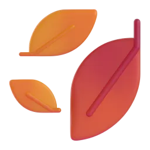
Autumn
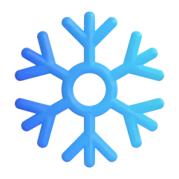
Winter
b Role play. Student A asks for a year off. Student B is the boss.
Student Ayou
Ask for a year off. Explain what you would do and why it would be good for the company too.
If I took a year off, I would come back…I would learn…It would help me to…I would make the most of it.
Student Bthe boss (teacher)
You are not sure. Ask difficult questions.
Who would do your work?What would happen if you didn't come back?Why now?What would you learn?
c Talk about the questions.
Talk about it
Did you get your year off? Why or why not?
Which part of your dream year could you do in real life? When?
What is one small change you could make this month?
Give a reason and an example. Then ask a follow-up question: "Why?", "What about you?"
My dream year
3 min
a Write about your dream year (100–120 words) in the box at the bottom of this page. Use five Second Conditional sentences and five words from the Vocabulary Bank.
b Fun task: finish the sentences.
If I were an animal, I would be a … because …
If I were a city, I would be … because …
If I were a season, I would be … because …
If I could have dinner with anyone, I would choose … because …
c Press «Отправить преподавателю» and send the link.
Готово? Отправьте ответы преподавателю
Откроется окно «Поделиться»: выберите мессенджер и отправьте ссылку преподавателю. Ответы зашифрованы, открыть их может только преподаватель.
Can you…?
4 min
a Listen to your teacher. Repeat the corrected sentences.
Great phrases you used
Let's fix
b Can you do these things? Tap your answer.
I can use the new words about changing my life.
I can say if a situation is real or imagined.
I can make sentences: If I had…, I would…
I can talk about imaginary situations without stopping.
What is still difficult about the Second Conditional? (Russian is OK)
new words: life changes
15 min at home
Homework: new words. You can do it on your phone — almost everything is tapping. At the end press «Отправить преподавателю».Домашнее задание на новые слова. Почти всё — нажатием кнопок.
a Look at the picture. Which phrase is it?
→
→
→
→
→
→
b What does it mean? Tap the right phrase.
"to start a calm life in one place" →
"to stop doing something" →
"to stop working for a year" →
"to use something as well as you can" →
"to have enough money for something" →
c Complete the sentences. Tap the missing word.
My friend wants to take the guitar.
I gave sugar last year and I feel great.
After years of travelling, they settled in a small town.
It's sunny today — let's make the of it!
Seeing the Northern Lights is on my bucket .
Our trip to Japan was a dream come .
d Write about you. One sentence for each question (use the phrase in bold).
What hobby do you want to take up?
What is on your bucket list?
When did you feel stuck in a rut? What helped?
What can't you afford now but really want?
e Speaking (on your phone): record a voice message (1 minute) about your dream. Use three phrases from the lesson. Send it to your teacher.
Готово? Отправьте ответы преподавателю
Откроется окно «Поделиться»: выберите мессенджер и отправьте ссылку преподавателю. Ответы зашифрованы, открыть их может только преподаватель.
extra practice
10 min
What to do
Build the sentences: tap the words in the right order. Made a mistake? Press «↺ Заново».
Find the mistake in each sentence and write the correct sentence.
Press «Проверить» after each exercise.
1. Build the sentence
2. Find the mistake
If I would have money, I would travel.
If I am you, I would rest.
If she had time, she would learns Spanish.
If we lived by the sea, we swim every day.
IRIS SCHOOL · Иола
Nature's Record-Breakers
The furthest traveller, the toughest survivor, the strongest bite… A magazine article, B1 words, comparatives and superlatives at a higher level, an info-gap and a debate.
“The Arctic tern can fly as far as going to the Moon and back three times in its life.”Fact of the day
B1Animals & natureComparatives & superlatives+Article · Debate60–65 min
animals and nature
12 min
Today you will…
use B1 words about animals and nature
compare in more interesting ways: much faster, not as fast as, one of the fastest, the … I've ever seen
understand a magazine article and find information quickly
ask for information you don't have and compare
give your opinion and argue in a debate
a Odd one out! Which animal is different in each group? There is more than one answer — explain your choice.
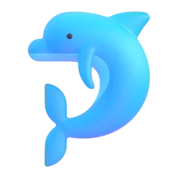
dolphin
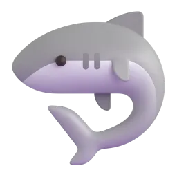
shark
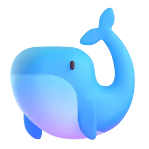
whaleoctopus
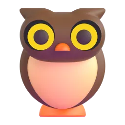
owl
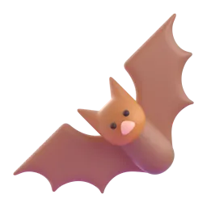
bat
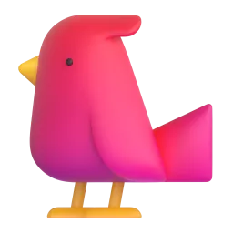
swallow
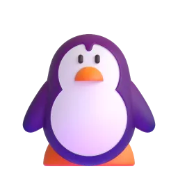
penguin
I think the … is the odd one out because…It's the only one that…All the others can…, but…
Talk about it
Can you find a second answer for each group?
Which of these animals is the most intelligent, do you think?
b Go to the Vocabulary Bank. Tap each card, press 🔊 and repeat. Then complete the sentences.
Vocabulary Bank1AAnimals and nature
The dodo became in the 17th century.
Bats are : they sleep during the day and hunt at night.
The snow leopard is : there are only a few thousand left in the wild.
Zebras are for lions.
Every autumn, millions of birds to warmer countries.
A chameleon's helps it to hide from predators.
Polar bears have to life in the Arctic.
When forests are cut down, many animals lose their .
c Discuss.
Talk about it
Why do you think some species become endangered?
Should people keep wild animals like snakes or parrots as pets? Why / why not?
Which is more important: protecting animals' habitats or building new houses and roads?
Give a reason and an example. Then ask a follow-up question: "Why?", "What about you?"
Nature's Record-Breakers
12 min
a Before you read: guess! Then read and check.
Which animal travels the furthest every year?
Which tiny animal has survived a trip into space?
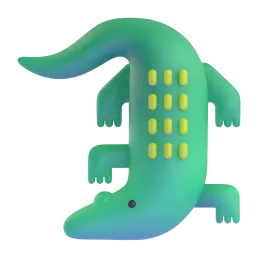
Which animal has the strongest bite ever measured?
Which is the heaviest animal that has ever lived?
Nature's Record-BreakersA magazine article · about 280 words
A Every year, the Arctic tern flies from the Arctic to the Antarctic and back again — about 70,000 kilometres. It is one of the longest migrations of any animal on Earth. In its life of around 30 years, an Arctic tern can fly as far as going to the Moon and back three times!
B Tardigrades, or 'water bears', are less than one millimetre long, so a tardigrade isn't as big as an ant — it is much smaller. But it is far tougher. Tardigrades can survive extreme cold and heat, and in 2007 scientists sent some into space. Many of them came back alive.
C The blue whale is not only the biggest animal alive today; it is the heaviest animal that has ever lived. It can be up to 30 metres long and is heavier than 25 elephants. Even a baby blue whale is bigger than most adult animals.
D The saltwater crocodile has the strongest bite ever measured in a living animal. Its bite is far stronger than a lion's or a tiger's. Luckily, the muscles that open its jaws are quite weak.
E Sloths spend most of their lives in trees and come down only about once a week — to go to the toilet! They move so slowly that tiny plants called algae grow on their fur, which gives them green camouflage. For a sloth, the slower it moves, the less energy it uses.
b Read again. Match the headings to the paragraphs A–E.
Paragraph A →
Paragraph B →
Paragraph C →
Paragraph D →
Paragraph E →
c True, False or Doesn't say?
The Arctic tern flies to the Antarctic and back every year. →
Tardigrades are bigger than ants. →
Some tardigrades have been to space. →
The blue whale is the heaviest animal in history. →
Saltwater crocodiles live in rivers and in the sea. →
Sloths come down from the trees every day. →
d Find words in the article. Write them.
a long journey that animals make every year (paragraph A) →
strong, difficult to hurt (paragraph B) →
very, very cold or hot (paragraph B) →
the bones of the mouth that hold the teeth (paragraph D) →
tiny green plants (paragraph E) →
e Discuss.
Talk about it
Which record-breaker is the most impressive? Why?
Which fact would you tell your friends tomorrow?
Which animal from the article would you like to see in real life?
Give a reason and an example. Then ask a follow-up question: "Why?", "What about you?"
comparatives and superlatives: going further
12 min
a Look at the article again. Find and underline (say to your teacher) one example of each:
much / far + comparative
not as … as
the + superlative + ever
one of the + superlative
the …, the …
b Read the rules in the Grammar Bank. Then do the exercises — this time you write the answers!
Grammar Bank1Acomparatives and superlatives
rule
example
much / far / a bit + comparative
A tardigrade is much smaller than an ant. Its bite is far stronger. I'm a bit taller than my sister.
(not) as … as
A tardigrade isn't as big as an ant. My cat is as lazy as a sloth!
the + superlative + (that) … ever
the heaviest animal that has ever lived · the best film I've ever seen
one of the + superlative + plural noun
It is one of the longest migrations on Earth.
less / the least
Sharks are less dangerous than people think. It's the least interesting fact.
the + comparative, the + comparative
The slower it moves, the less energy it uses. The bigger, the better!
Подсказка.much / far = «намного», a bit = «чуть-чуть»: much faster — намного быстрее (но не very faster!). not as … as = «не такой …, как». После one of the — всегда множественное число: one of the best players. The …, the … = «чем …, тем …».
1 Write the correct form of the adjective.
A tardigrade is much (small) than an ant.
The saltwater crocodile has one of the (strong) bites in the world.
My cat is a bit (lazy) than my dog.
This is the (good) documentary I've ever seen!
Yesterday's test was far (bad) than today's.
The (far) you walk, the (tired) you get.
2 Complete the second sentence so it means the same.
A horse is slower than a cheetah. A horse isn't a cheetah.
A mouse is lighter than a cat. A mouse isn't a cat.
I have never seen such a beautiful bird. It's the I've ever seen.
Bees and ants are both very hard-working. Bees are ants.
When it moves more slowly, a sloth uses less energy. The a sloth moves, the energy it uses.
What is the best book or film you have ever read or seen? Why?
Who is one of the funniest people you know?
Is English as difficult as maths for you? Is it much easier or a bit easier?
Finish the sentence: "The more I practise, the…"
Try to use a different structure in each answer.
weak forms; word stress
6 min
a In sentences, as, than and -er are weak: /əz/, /ðən/, /ə/. Listen and repeat.
/ə/computerthan /ðən/ · as /əz/ · faster /ˈfɑːstə/
A HORSEISn't as FAST as a CHEEtah.
A TARdigrade is MUCHSMALLer than an ANT.
It's ONE of the LONGest miGRAtions on EARTH.
b Word stress. Press 🔊. Which part is stressed?
dangerous →
endangered →
intelligent →
nocturnal →
venomous →
extinct →
c Say three true sentences about animals with much, not as … as and one of the. Make than and as short!
Save one species
10 min
a You have money to protect only ONE of these animals. Which would you choose? Prepare three reasons.
tigerrhino
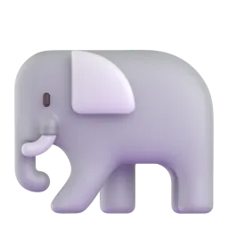
African elephant
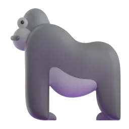
gorillasea turtlepolar bear
I'd choose the … because…It is one of the most…It's far more … than…The … isn't as … as…If we lose the…, …
b Tell your teacher your choice. Your teacher chooses a different animal. Try to change your teacher's mind!
c Debate: "Zoos do more good than harm." Write two arguments FOR and two AGAINST. Then choose your side.
For 👍
Against 👎
In my opinion…I see your point, but…The most important thing is…That's not as important as…What about…?
Talk about it
Did your teacher change your mind? Why / why not?
What can young people do to help endangered animals?
Give a reason and an example. Then ask a follow-up question: "Why?", "What about you?"
Animal fact files
8 min
a Student A: you have three fact files. Student B (your teacher) has three different ones. Ask questions and write the answers.
Student Ayour fact files
speed
weight
lifespan
cheetah
up to 110 km/h
35–65 kg
about 12 years
emperor penguin
swims about 10 km/h
up to 40 kg
about 20 years
African elephant
up to 40 km/h
up to 6,000 kg
60–70 years
Student Bthe teacher's fact files
Ask your teacher about the ostrich, the giant tortoise and the polar bear:
How fast can it run?How heavy is it?How long does it live?Can you spell that?
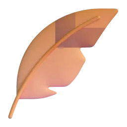
ostrich
giant tortoise
polar bear
b Now compare. Write three sentences: use much / far, not as … as and the superlative.
c Discuss.
Talk about it
Which of the six animals would you most like to be for a day? Why?
Which number surprised you the most?
Which animal is the best at surviving? Why?
Give a reason and an example. Then ask a follow-up question: "Why?", "What about you?"
Comparing two animals
3 min
a Choose two animals from today. Write a paragraph comparing them (100–120 words) in the box at the bottom of this page.
Use:much / far + comparative · not as … as · one of the + superlative · and linking words: whereas, while, however, both, but. Example start:Both the cheetah and the ostrich are fast runners. However, the cheetah is much faster, whereas the ostrich…
b Bonus: invent a super-animal that breaks three records. Describe it in five sentences.
c Press «Отправить преподавателю» and send the link.
Готово? Отправьте ответы преподавателю
Откроется окно «Поделиться»: выберите мессенджер и отправьте ссылку преподавателю. Ответы зашифрованы, открыть их может только преподаватель.
Can you…?
3 min
a Listen to your teacher. Repeat the corrected sentences.
Great phrases you used
Let's fix
b Can you do these things? Tap your answer.
I can use B1 words about animals and nature.
I can use much / far, not as … as, one of the … and the …, the …
I can find information in an article quickly.
I can ask questions to get information and compare.
I can give my opinion in a debate.
The most interesting thing today was…
extra practice
10 min
What to do
Build the sentences: tap the words in the right order. Made a mistake? Press «↺ Заново».
Find the mistake in each sentence and write the correct sentence.
Press «Проверить» after each exercise.
1. Build the sentence
2. Find the mistake
It's the most biggest animal.
A cat isn't as big than a dog.
It's one of the most beautiful bird in the world.
This is the best film I ever saw.
IRIS SCHOOL · Саша
Plan B
Flights get cancelled, plans change, phones die. What will you do if…? Future forms review, the first conditional and time clauses, phrasal verbs — and lots of talking.
“If plan A doesn't work, the alphabet has 25 more letters.”Popular saying
B1Plans & problemsFirst conditional & time clausesLots of speaking60–65 min
plans and problems: phrasal verbs
12 min
In this lesson you will…
review future forms from the last lesson
use 10 phrasal verbs for plans and problems
talk about possible future situations: If…, I'll… · When…, I'll…
solve problems and negotiate a plan in English
aReview: future forms. We did these last time. Tap the best option.
Look at those black clouds! It .
I Anton at 7 tonight — we booked a table.
"The phone's ringing." — "OK, I it."
We a new car next year — we've been saving for it.
I think Spartak tomorrow.
Напоминание.be going to — план / видно по признакам; Present Continuous — договорённость (есть время, место); will — решение в момент речи, обещание, мнение (I think…).
b Go to the Vocabulary Bank. Tap each card, press 🔊 and repeat. Then complete the sentences.
Vocabulary Bank1BPlans and problems
It's raining, so they've called the match.
We've run milk. Can you buy some?
Stop putting your homework!
I can't figure this map.
Don't worry about the tickets — I'll sort it .
We set early to avoid the traffic.
c Ask and answer.
Talk about it
What are you looking forward to this month?
What do you always put off? Why?
Have you ever backed out of something at the last minute?
Who in your family always comes up with good ideas?
Give a reason and an example. Then ask a follow-up question: "Why?", "What about you?"
Plan B: when things go wrong
10 min
a Read three stories. Which plan B was the best?
The festival Max, 24
We were looking forward to the music festival for months. The day before, they called it off because of a storm. We were so disappointed! But my friend came up with a plan B: we set up a mini festival in his garden with a speaker and a barbecue. Twenty people turned up. Honestly, it was better than the real one.
The road trip Dasha, 31
We set off for the mountains at six in the morning. Three hours later we ran out of petrol — the nearest station was 20 km away. A farmer stopped and gave us some petrol from his tractor. Next time I will check everything before we leave!
The flight Ilya, 27
My flight was cancelled and the next one was in two days. I couldn't put off the business meeting, so I figured out a route by train and bus. It took 19 hours, but I arrived just in time. As soon as I walked in, my boss said, "Why do you look so tired?"
b True, False or Doesn't say?
The festival was cancelled because of the weather. →
Max enjoyed the garden party less than a real festival. →
Dasha was driving the car. →
They got petrol from a farmer. →
Ilya's meeting was put off. →
Ilya travelled for almost a day. →
c Find the phrasal verbs in the stories. How many can you find? Say them to your teacher.
Talk about it
What's the worst travel problem you've ever had? How did you sort it out?
Are you good at coming up with a plan B?
Which story would make the best film?
Give a reason and an example. Then ask a follow-up question: "Why?", "What about you?"
first conditional and future time clauses
12 min
a Look at these sentences. What tense comes after if, when and as soon as?
If the festival is cancelled, we'll have a party in the garden. As soon as I get to the station, I'll call you. I won't go until you arrive.
After if / when / as soon as / until we use…
b Read the rules in the Grammar Bank. Then do the exercises.
Grammar Bank1Bfirst conditional; future time clauses
if / when / as soon as / until / before / after + present simpleWhen I arriveif it rains · as soon as I know · until he calls
,
will / won't + verbI'll call youwe'll stay · I won't go
Future meaning, but after if, when, as soon as, until, before, after, unless we use the present simple!
word
meaning
example
if
maybe it will happen
If the flight is cancelled, I'll take the train.
when
I'm sure it will happen
When I get home, I'll text you.
unless
= if … not
We'll miss the train unless we leave now.
as soon as
immediately when
I'll call you as soon as I land.
until
up to the time when
I'll wait until you come.
❌ When I will arrive, I'll call you. ❌ If it will rain, we'll stay home.
✅ When I arrive, I'll call you. ✅ If it rains, we'll stay home.
Подсказка. В русском после «когда / если» будущее: «когда приеду, позвоню». В английском после when / if / as soon as / until — настоящее время: when I arrive. will — только в другой части предложения.
c Finish the sentences about YOU. Say them to your teacher.
Talk about it
When I get home today, I…
If the weather is good this weekend, I…
I won't be happy until I…
As soon as I have enough money, I…
Then ask your teacher: "And you?"
'll; won't /wəʊnt/ or want /wɒnt/?
6 min
awill is usually 'll — very short: I'll /aɪl/, it'll /ˈɪtəl/, we'll /wiːl/. Listen and repeat.
I'll call you when I get home.
It'll be fine, don't worry.
We'll sort it out.
If it rains, we'll stay at home.
bwon't /wəʊnt/ and want /wɒnt/ sound similar! Press 🔊 and choose.
→
→
→
→
Подсказка. won't — «воунт» (как в no), want — «вонт» (короткое «о»).
What will you do if…?
12 min
a Problem solving. Press the button. Say what you'll do — give a plan A and a plan B!
Press the button for a problem
Your flight is cancelled and the next one is in two days.
You arrive at the hotel and they have no record of your booking.
Your phone battery dies in a foreign city at night.
Your best friend backs out of your holiday together a week before.
It rains every day of your beach holiday.
You run out of money halfway through your trip.
Your boss calls you on your first day of holiday.
If that happens, I'll…First I'll… and as soon as…, I'll…If that doesn't work, I'll…I won't… until…I'll sort it out by…
b Chain game. Take turns with your teacher. How long can the chain be?
If I win the lottery, I'll buy a boat. → If I buy a boat, I'll sail to Greece. → If I sail to Greece, I'll…
c Promises! Make three promises to your teacher about your English: I'll… as soon as… · I won't… until…
Talk about it
Which problem from part a is the worst? Why?
Are you a person who always has a plan B?
What are you going to do this weekend? What will you do if your plans change?
Give a reason and an example. Then ask a follow-up question: "Why?", "What about you?"
Plan the weekend trip
10 min
a Role play. You and your friend (your teacher) are planning a weekend trip together. Agree on: where, how, where to stay, what to do. Your friend has some problems — find solutions!
Student Ayou
You want to go to Kazan by train on Friday evening, stay in a nice hotel and do a lot of sightseeing. Your budget is quite big.
How about…?If we take the train, we'll…OK, I'll book… as soon as…What if…?Fine — but if…, we'll…Let's…, unless…
Student Byour friend (teacher)
Your teacher has a role card. Listen to the problems and come up with solutions!
That's a problem…I'm not sure…Can we…?
b Write your final plan.
Where and when?
How and where to stay?
Plan B
Talk about it
Who was better at negotiating?
Would you really go on this trip?
Give a reason and an example. Then ask a follow-up question: "Why?", "What about you?"
An email about plans
3 min
a Write an email to a friend (120–150 words) in the box at the bottom of this page: invite them on a trip, explain your plans and plan B.
Use: future forms (going to, present continuous, will) · two sentences with if / unless · two with when / as soon as / until · four phrasal verbs. Start:Hi Lena! Guess what? I'm going to… Do you want to come? We're setting off on… If…, we'll…
b Press «Отправить преподавателю» and send the link.
Готово? Отправьте ответы преподавателю
Откроется окно «Поделиться»: выберите мессенджер и отправьте ссылку преподавателю. Ответы зашифрованы, открыть их может только преподаватель.
Can you…?
3 min
a Listen to your teacher. Repeat the corrected sentences.
Great phrases you used
Let's fix
b Can you do these things?
I can choose the right future form.
I can use phrasal verbs for plans and problems.
I can use the present after if, when, as soon as, until.
I can solve problems and negotiate a plan.
extra practice
10 min
What to do
Build the sentences: tap the words in the right order. Made a mistake? Press «↺ Заново».
Find the mistake in each sentence and write the correct sentence.
Press «Проверить» after each exercise.
1. Build the sentence
2. Find the mistake
When I will arrive, I'll call you.
If it will rain, we'll stay at home.
I'll wait until you will come.
Unless you don't hurry, you'll miss the bus.
IRIS SCHOOL · Онлайн-школа · Ксения
The Story Behind the Photo
Every photo has a story. Irregular verbs, past simple and past continuous, and telling your own story — step by step.
“A photo is a story without words — so tell it!”Today's idea
Pre-IntermediateStories & photosPast simple & continuousStorytelling60–65 min
irregular verbs; telling a story
12 min
In this lesson you will…
use the past forms of common irregular verbs
tell a story with past simple and past continuous
organise a story: first, then, suddenly, in the end
ask questions about the past
a Look at the "photos". Choose one. What do you think happened? Invent a short story.
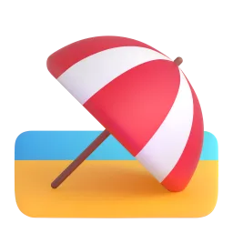
a beach holidaya mountain tripa birthday
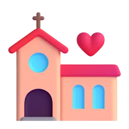
a wedding
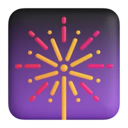
New Year
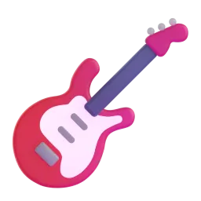
a concert
Talk about it
Which photo on your phone is your favourite? Why?
Do you print photos or keep them on your phone?
Who takes the most photos in your family?
b Go to the Vocabulary Bank. Write the past form of each verb. Then press 🔊 and repeat.
Vocabulary Bank1BIrregular verbs
go →
take →
meet →
see →
lose →
find →
buy →
think →
feel →
fall →
Подсказка. Эти глаголы надо выучить: у них нет окончания -ed. В вопросах и отрицаниях с did снова базовая форма: I went → Did you go? · I didn't go.
c Time sequencers. Put the words in a typical story order.
1st →
2nd →
3rd (something unexpected) →
4th (the result) →
First, …Then / After that, …Suddenly, …In the end / Finally, …
The story behind the photo
10 min
a Read three stories. Which is the funniest? Which is the luckiest?
The wave Marina, 36
This photo was taken in Sochi in 2019. My sister and I were walking along the beach and we were laughing about something. Suddenly a huge wave came and we got completely wet! A man who was standing nearby took this photo. We didn't know him, but he sent it to us later. It's my favourite photo of us.
The cake Oleg, 42
It was my son's sixth birthday. I was carrying the cake into the room and everyone was singing "Happy Birthday". Then our dog ran under my feet and I fell — with the cake! My wife was filming, so we have the whole video. My son thought it was the best birthday ever.
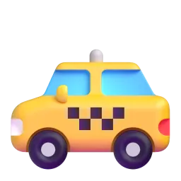
The taxi Anya, 29
I was living in London and I was going to an important job interview. It was raining and I couldn't find a taxi. A woman stopped her car and asked, "Are you OK?" She drove me to the interview — and then I saw her again: she was the director! I got the job. We took this selfie on my first day at work.
b True, False or Doesn't say?
Marina and her sister were swimming when the wave came. →
A stranger took the photo on the beach. →
Oleg dropped the cake because of the dog. →
Oleg's son was upset. →
Anya was late for the interview. →
The woman in the car was the director. →
c Find in the stories: three verbs in the past continuous (was/were + -ing) and five irregular verbs in the past simple. Say them to your teacher.
Talk about it
Which story do you like most? Why?
Has anything funny or lucky happened to you on a special day?
Give a reason and an example. Then ask a follow-up question: "Why?", "What about you?"
past simple or past continuous?
12 min
a Look at the sentence from Marina's story. Which action was longer?
My sister and I were walking along the beach when a huge wave came.
Which action started first and was in progress?
b Read the rules in the Grammar Bank. Then do the exercises.
Grammar Bank1Bpast simple and past continuous
was walking along the beach (long action, background)
a wave came (short action)
past continuous: was / were + -ing
past simple
use
an action in progress, the background
a finished action, the main events
+
I was walking. They were laughing.
A wave came. We got wet.
−
She wasn't listening.
We didn't know him.
?
What were you doing?
Where did you go?
when + past simple (short action) · while + past continuous (long action): I was carrying the cake when the dog ran under my feet. While I was living in London, I met her.
❌ I was see her yesterday. ❌ When I was arriving, they were waiting. ❌ Where you went?
✅ I saw her yesterday. ✅ When I arrived, they were waiting. ✅ Where did you go?
Подсказка. Past continuous отвечает на вопрос «что делал(а)?» — процесс, фон: «я шла по пляжу». Past simple — «что сделал(а)?»: «пришла волна». В вопросах — та же схема Q·A·S·I, что вы уже знаете: Where did you go? What were you doing?
c Questions about the past. Build them — remember Q · A · S · I!
d Ask and answer with your teacher.
Talk about it
What were you doing at this time yesterday?
Where did you go on your last holiday? What did you do there?
What were you doing when you heard some very good news?
Give a reason and an example. Then ask a follow-up question: "Why?", "What about you?"
-ed endings: /t/, /d/, /ɪd/
6 min
a Regular past forms end in -ed, but there are three different sounds. Listen and repeat.
/t/walked, laughed, stopped
/d/played, arrived, called
/ɪd/wanted, started, needed
Подсказка. /ɪd/ — только после звуков /t/ и /d/: wanted, needed. В остальных словах лишнего слога нет: walked = /wɔːkt/, не «уолкед»!
b Press 🔊. Which sound is it?
looked →
decided →
stayed →
finished →
visited →
opened →
c In sentences, was and were are weak: /wəz/, /wə/. Say the sentences.
I was walking along the beach.
They were laughing when the wave came.
What were you doing?
Your photo story
10 min
a Choose a photo on your phone (or one of the pictures in part 1). Plan the story behind it.
When and where was it?
What were you doing? (background)
What happened? (main events)
How did it end? How did you feel?
b Tell your story to your teacher (1–2 minutes). Your teacher asks questions.
It was in… / It happened…We were… -ing when…Suddenly…In the end…I felt…
Talk about it
Why is this photo important for you?
Who else was there? What were they doing?
Would you like to go back to that moment?
Give a reason and an example. Then ask a follow-up question: "Why?", "What about you?"
The alibi game
10 min
a Someone stole a cake from the office kitchen last Friday between 7 and 9 p.m.! Student A is the detective. Student B (your teacher) is the suspect. Ask questions and write the answers.
Student Athe detective (you)
Find a mistake in the alibi! Ask about times, places, people, details.
Where were you at 7 p.m.?
What were you doing at 8 p.m.?
Who were you with?
What did you eat?
What time did you get home?
Student Bthe suspect (teacher)
Answer the detective's questions. Your story must be in the past simple and past continuous.
At 7 I was…Then I went…I was with…I didn't…
b Swap! Now you are the suspect. Prepare your alibi for 7–9 p.m. last Friday and answer your teacher's questions. Don't make mistakes!
Talk about it
Did you find a mistake in your teacher's alibi?
Who is the better detective?
Give a reason and an example. Then ask a follow-up question: "Why?", "What about you?"
The story behind my photo
3 min
a Write the story behind your photo (100–120 words) in the box at the bottom of this page. Use the past simple and past continuous and at least three sequencers (first, then, suddenly, in the end).
Plan: When and where? · What were you doing? · What happened? · How did it end? · How did you feel?
b Bonus: send the photo to your teacher in the messenger.
c Press «Отправить преподавателю» and send the link.
Готово? Отправьте ответы преподавателю
Откроется окно «Поделиться»: выберите мессенджер и отправьте ссылку преподавателю. Ответы зашифрованы, открыть их может только преподаватель.
Can you…?
3 min
a Listen to your teacher. Repeat the corrected sentences.
Great!
Let's fix
b Can you do these things?
I can use the past forms of common irregular verbs.
I can choose between was doing and did.
I can tell a short story with first, then, suddenly, in the end.
I can ask questions about the past.
What is still difficult? (Russian is OK)
extra practice
10 min
What to do
Build the sentences: tap the words in the right order. Made a mistake? Press «↺ Заново».
Find the mistake in each sentence and write the correct sentence.
Press «Проверить» after each exercise.
1. Build the sentence
2. Find the mistake
I was see him yesterday.
When I was arriving, they were waiting.
Where you went last summer?
While I cooked, the phone was ringing.
IRIS SCHOOL · Онлайн-школа · Дмитрий
The Human Factor
Most attacks start with a conversation. A real-life style case study, a whodunnit, modals of deduction — and explaining tech to a CEO.
“Most attacks start with a conversation. The attacker doesn't break in — he's invited in.”From the case study
B2CybersecurityModals of deductionMediation60–65 min
get ready for "The Human Factor"
25 min at home
Before the lesson. Do this at home — it works on your phone. Don't look anything up in part e: it shows your teacher what to focus on. At the end press «Отправить преподавателю».Подготовка к уроку: слова, мини-тест и вопросы о вашей работе.
aWords for the lesson. Tap each card to see the meaning, press 🔊 and repeat. Save the words you want to keep.
b Match the definition and the term.
"a weakness that an attacker can use" →
"to pretend to be another person" →
"tricking people, not computers, to get access" →
"when private data is stolen or made public" →
"software designed to damage or steal" →
c Collocations. Tap the missing word.
to fall a scam
to hack a system
to back your files
to raise the
two-factor
d Write the missing word. The first letter is given.
The attacker i the CEO in a phone call.
Someone l the salary spreadsheet to the press.
The email was a classic p attack.
Always b your files before an update.
eWhat do you already know? Choose the best option. No answers button — just your best guess!
Someone sent the file at 3 a.m. It an insider — only we have access.
She the email — she was on a plane with no Wi-Fi.
I'm not sure. He the link by mistake.
The server is very slow today. Someone a huge backup right now.
They a fake phone number.
f About you and your work. Answer in two or three sentences.
What do you do in IT? Are you involved in security?
What is the most common security mistake people make at your company?
Does your company train staff to spot phishing? How?
g Prepare a short story for the lesson: a time when you, a colleague or a friend almost fell for a scam or a phishing email. What happened? How did you notice?
Notes for your story
Готово? Отправьте ответы преподавателю
Откроется окно «Поделиться»: выберите мессенджер и отправьте ссылку преподавателю. Ответы зашифрованы, открыть их может только преподаватель.
cybersecurity
12 min
In this lesson you will…
use precise vocabulary for cybersecurity and online crime
speculate about the past with must have, might have, can't have
explain a technical incident to a non-technical person
write a clear warning email to staff
a How secure are you really? Answer honestly and give an example.
Talk about it
Do you use the same password for more than one account?
Have you ever received a phishing email that almost fooled you?
Who is the weakest link in a company's security: software, hardware or people?
b Go to the Vocabulary Bank. Tap each card, press 🔊 and repeat. Then complete the sentences.
Vocabulary Bank1ACybersecurity
The attacker a manager and asked for a payment.
Thousands of passwords were exposed in the data .
Even experienced engineers sometimes fall phishing emails.
If you had your files, you wouldn't have lost them.
The testers found a serious in the payment API.
Luckily, an intern noticed the strange login and raised the .
c Discuss.
Talk about it
What security rules at your work do people ignore most often? Why?
Is it the company's fault or the employee's fault when someone falls for a phishing email?
Should companies test their staff with fake phishing emails?
Give a reason and an example. Then ask a follow-up question: "Why?", "What about you?"
The call from "IT Support"
12 min
a Read the case study. In one sentence: how did the attack work?
The Call from "IT Support"A case study · about 300 words
At 4.45 on a Friday afternoon, Maria, an accountant at a mid-sized logistics company, received a call. "Hi Maria, it's Alex from IT support. We're seeing some strange activity on your account — it looks like someone in another country is trying to log in. I need to verify a few things quickly before the weekend."
Alex sounded friendly and professional. He knew Maria's full name, her manager's name and the name of the accounting software she used every day. He asked her to read out the six-digit code that had just arrived on her phone, "to confirm it's really you". Maria hesitated for a second, then read out the code. Alex thanked her and wished her a nice weekend.
On Monday morning, the finance director discovered that three payments, worth almost €90,000 in total, had been sent to an unknown bank account over the weekend. There was no Alex in the IT department.
The investigation showed that the attacker hadn't used any sophisticated malware. He had found most of the information on the company website and on social media. Maria's team page listed her role, and her manager had posted about the new accounting software on a professional network. The six-digit code was the second factor of her two-factor authentication — the one thing that should have protected her.
"People think hacking is about code," says the security consultant who led the investigation. "But most attacks start with a conversation. The attacker doesn't break in — he's invited in."
The attack mainly worked because…
b True, False or Doesn't say?
The call came at the end of the working week. →
Alex used malware to get into the system. →
The money was sent on Monday morning. →
Maria had been with the company for many years. →
Most of the information came from public sources. →
The company got the money back. →
c Find a word or phrase in the text. Write it.
to check that something is true (para 1) →
stopped for a moment because she wasn't sure (para 2) →
very advanced, complicated (para 4) →
an expert who gives professional advice (para 5) →
d Discuss.
Talk about it
What were the warning signs? List three.
What would you have done in Maria's place?
What should the company change now?
Give a reason and an example. Then ask a follow-up question: "Why?", "What about you?"
modals of deduction: present and past
12 min
a Read the investigator's notes. How sure is she in each sentence?
1. The attacker must have studied the company website. 2. He might have used a fake caller ID. 3. It can't have been a random call — he knew too much. 4. He must be part of an organised group.
b Read the rules in the Grammar Bank. Then do the exercises.
Grammar Bank1Amodals of deduction
how sure?
present
past
✅ I'm sure it's true
He must be an insider.
He must have known her name.
🤔 It's possible
It might / may / could be a test.
He might / may / could have found it online.
❌ I'm sure it's not true
It can't be a mistake.
It can't / couldn't have been a random call.
Past deduction: modal + have + past participle (must have sent, might have seen, can't have known).
❌ He mustn't have known. (= opposite of must for deduction) ❌ He must has known.
✅ He can't have known. ✅ He must have known.
Подсказка. must have done = «наверняка сделал», might / could have done = «возможно, сделал», can't have done = «не мог сделать». Для «точно нет» используем can't, а не mustn't.
1 Choose the best option.
The server is down again. Someone the settings — it was fine an hour ago.
She the email — she was on a plane with no Wi-Fi.
I'm not sure who leaked it. It someone from marketing.
He really tired — he's been coding for 14 hours.
They into the old system — it had no updates for years.
2 Rewrite the sentences with a modal of deduction.
I'm sure he found her on LinkedIn. He her on LinkedIn.
Maybe the email came from inside the company. The email from inside the company.
I'm sure it wasn't a technical problem. It a technical problem.
I'm certain they are watching our network now. They our network now.
c Speculate! What must / might / can't have happened?
Talk about it
Your laptop suddenly restarted and all the icons look different.
A colleague is suddenly very rich and drives a new Porsche.
All the coffee machines in the office stopped working at exactly 9.00.
Give two possible explanations and say how sure you are.
weak have: must've, might've, can't have
5 min
a In speech have is weak: must've /ˈmʌstəv/, might've /ˈmaɪtəv/, can't have /ˈkɑːntəv/. Listen and repeat.
/ə/computermust've /ˈmʌstəv/
He must have known her name.
She might have clicked the link.
It can't have been a mistake.
They could have used a fake number.
b Sentence stress: the modal and the main verb are strong, have is weak.
He MUST have STUDied the WEBsite.
It CAN'T have been an ACcident.
Whodunnit: the leaked salaries
10 min
a The company salary spreadsheet was leaked to the whole office. Press the button to get the clues one by one. After each clue, speculate.
Press the button for the first clue
The spreadsheet was sent from the HR manager's account at 2.13 a.m.
The HR manager was at home with flu all week and her laptop was in the office.
The office cleaners work from 1 to 3 a.m.
The HR manager's password was on a sticky note under her keyboard.
Only three people knew the spreadsheet existed: the HR manager, the CEO and the CFO.
The CFO resigned the next morning and moved to a competitor.
The CCTV camera on that floor had been "broken" for two weeks.
It must have been…It can't have been…, because…He might have…That would explain why…I'm not convinced. What if…?
b Decide together: who did it and how? Write your theory.
Our theory
Talk about it
How could the company have prevented this?
Have you ever had to investigate a problem at work? How did you find the cause?
Give a reason and an example. Then ask a follow-up question: "Why?", "What about you?"
Explain it to the CEO
10 min
a Role play. Student A is the head of security. Student B is the CEO, who is not technical. Use the case from the Reading.
Student Ahead of security (you)
Explain what happened, why it happened and what the company must do now. No jargon — or explain it simply!
In simple terms, …Think of it like…The key problem was…He must have…What we need to do now is…The good news is…
Student Bthe CEO (teacher)
You are worried and impatient. You don't understand technical words.
Sorry, what does that mean?Whose fault was it?How much will this cost?Could it happen again?Why didn't two-factor authentication stop it?
b Swap: the teacher explains a technical problem badly. Student A asks for clarification and paraphrases it.
Talk about it
Was it difficult to avoid jargon? Which words did you have to explain?
Do you often explain technical things to non-technical people at work? How do you do it?
Give a reason and an example. Then ask a follow-up question: "Why?", "What about you?"
A warning email to staff
3 min
a Write an email to all staff (150–180 words) in the box at the bottom of this page. Warn them about the "IT support" scam, explain what happened (without names) and give three clear rules.
Useful language:Subject: Important — phone scam targeting staff · We have recently become aware of… · It appears that the caller must have… · Please note that IT support will never… · If you receive a suspicious call, … · Thank you for your vigilance.
b Use at least three modals of deduction and five words from the Vocabulary Bank.
c Press «Отправить преподавателю» and send the link.
Готово? Отправьте ответы преподавателю
Откроется окно «Поделиться»: выберите мессенджер и отправьте ссылку преподавателю. Ответы зашифрованы, открыть их может только преподаватель.
Can you…?
3 min
a Listen to your teacher. Repeat the corrected sentences.
Great phrases you used
Let's fix
b Can you do these things?
I can use precise cybersecurity vocabulary.
I can speculate about the past: must have, might have, can't have.
I can explain a technical incident without jargon.
I can write a clear warning email.
extra practice
10 min
What to do
Build the sentences: tap the words in the right order. Made a mistake? Press «↺ Заново».
Find the mistake in each sentence and write the correct sentence.
Press «Проверить» after each exercise.
1. Build the sentence
2. Find the mistake
He mustn't have seen the email, he was on holiday.
They must have hack the server.
She might has forgotten the password.
It can't be him yesterday.
IRIS SCHOOL · Онлайн-школа · Группа A1
Super Talents
What can you do? Swim, dance, cook — or play chess? Lots of games with your group. Что ты умеешь? Игры с группой на английском.
“Everybody is good at something!”Today's motto
A1Abilitiescan / can'tGroup games60 min
abilities
12 min
Today you will…
say what you can and can't doговорить, что вы умеете и не умеете
ask Can you…? and answerспрашивать «Can you…?» и отвечать
play games with your group in Englishиграть с группой на английском
a Look at the pictures. Press 🔊 and repeat.Посмотрите на картинки. Нажмите 🔊 и повторите.
swim плаватьride a bike кататься на велосипедеplay the guitar играть на гитареdance танцеватьsing петьcook готовитьdraw рисоватьskate кататься на конькахclimb лазатьplay football играть в футболplay chess играть в шахматыride a horse ездить верхом
b Go to the Vocabulary Bank. What is it? Choose.Что на картинке? Выберите.
Vocabulary Bank1AAbilities
→
→
→
→
→
→
c Mime game! One girl mimes an action. The others guess: "Swim!" "Dance!"Игра «Пантомима»: одна показывает действие, остальные угадывают.
Your turn · Ваша очередь
Which action is the most fun?Какое действие самое весёлое?
Which is the most difficult?Какое самое трудное?
Meet three people
8 min
a Read about three people. Press 🔊 to listen.Прочитайте о трёх людях. Нажмите 🔊, чтобы послушать.
Mia, 11
Hi! I'm Mia. I can swim and I can ride a horse. I can't sing — my singing is terrible! I can speak two languages: English and Spanish.
Sofia, 14
Hello! I'm Sofia. I can play the guitar and I can dance. I can't cook, but my brother can. Can you play chess? I can't!
Grandma Rose, 70
Hi there! I'm Rose. I can't skate, but I can ride a motorbike! I can cook very well and I can play chess. My grandchildren can't win!
b Yes or no? Choose.Да или нет? Выберите.
Can Mia sing? →
Can Mia ride a horse? →
Can Sofia cook? →
Can Sofia dance? →
Can Rose ride a motorbike? →
Can Rose skate? →
c Who is the most interesting? Why?Кто самый интересный? Почему?
can / can't
10 min
a Read the rules in the Grammar Bank.Прочитайте правило в Grammar Bank.
Grammar Bank1Acan / can't
✅ can + verb I can swim. She can dance. We can cook.
❌ can't (cannot) + verb I can't sing. He can't skate. They can't draw.
?Can you swim? — Yes, I can. / No, I can't. Can she cook? — Yes, she can. / No, she can't.
Подсказка.can = «могу, умею». Одинаково для всех: I can, she can (без -s!). После can — глагол без to: She can swim (не can swims, не can to swim). В вопросе can — на первом месте: Can you…?
c Say three things you can do and two things you can't do.Скажите три вещи, которые вы умеете, и две, которые не умеете.
can /kən/, can't /kɑːnt/
6 min
a Listen. In sentences can is short /kən/. Can't is long and strong /kɑːnt/.В предложении can звучит коротко /кэн/, can't — долго и сильно /каант/.
I can swim./kən/
I can't sing./kɑːnt/
Yes, I can!в коротком ответе — /kæn/
No, I can't./kɑːnt/
b Listen. Can or can't? Choose.Послушайте. Can или can't? Выберите.
→
→
→
→
c Say your sentences from Grammar c again. Make can short!Повторите свои предложения. Can — коротко!
Find someone who…
10 min
a Ask the other girls: "Can you…?" Write their names.Спросите других девочек: «Can you…?» Запишите имена.
Find someone who can…
Name
swim
dance
sing
draw
skate
play chess
Can you swim?Yes, I can!No, I can't.Me too!Wow!
b Tell the teacher about your group: "Anya can swim. Masha can't sing."Расскажите о группе: «Anya can swim…»
Your turn · Ваша очередь
Who can do the most things?Кто умеет больше всех?
What can nobody in the group do?Что не умеет никто?
Super robot
8 min
a Student A: design a robot. What can it do? What can't it do? Write.Придумайте робота. Что он умеет? Что не умеет?
Student Ayou
Example: My robot is Robo. It can cook and it can play chess. It can't swim!
Name
It can…
It can…
It can't…
Student Bthe group and the teacher
Listen and ask questions:
Can it dance?Can it speak English?Can it fly?Can it do my homework?
b Present your robot. The group asks questions. Vote: which robot is the best?Представьте робота. Группа задаёт вопросы. Голосуйте: чей робот лучший?
About me
3 min
a Write five sentences in the box at the bottom of this page: three things you can do and two things you can't do.Напишите пять предложений: что вы умеете и что не умеете.
b Write two sentences about a friend or a family member: My mum can…Два предложения о друге или маме: «My mum can…»
c Press «Отправить преподавателю» and send the link.Нажмите «Отправить преподавателю» и отправьте ссылку.
Готово? Отправьте ответы преподавателю
Откроется окно «Поделиться»: выберите мессенджер и отправьте ссылку преподавателю. Ответы зашифрованы, открыть их может только преподаватель.
Can you…?
3 min
a Can you do these things? Tap a smiley.Вы умеете это? Нажмите смайлик.
I can say what I can and can't doсказать, что я умею и не умею
I can ask Can you…? and answerспросить и ответить
I can play games in Englishиграть на английском
My favourite game today · Моя любимая игра сегодня
can / can't at home
15 min at home
Homework. Do it on your phone: tap the answers. At the end press «Отправить преподавателю».Домашнее задание: нажимайте на ответы. В конце нажмите «Отправить преподавателю».
a What can they do? Tap the words.Что они умеют? Выберите слова.
→
→
→
→
→
→
b Look at ✅ and ❌. Choose can or can't.Посмотрите на ✅ и ❌. Выберите can или can't.
✅ Tom play the guitar.
❌ My cat swim.
✅ I draw.
❌ We ride a horse.
✅ My mum cook.
c Which sentence is correct?Какое предложение правильное?
1.
2.
3.
d Build the sentences.Соберите предложения.
e About you. Tap your answer.О себе. Выберите свой ответ.
Can you swim?
Can you ride a bike?
Can you cook?
Can you play the guitar?
f Write three sentences: two things you can do, one thing you can't do.Напишите три предложения: два «умею», одно «не умею».
g Voice message: say five things you can or can't do. Send it to your teacher.Голосовое: скажите пять вещей, что вы умеете или не умеете. Отправьте преподавателю.
Готово? Отправьте ответы преподавателю
Откроется окно «Поделиться»: выберите мессенджер и отправьте ссылку преподавателю. Ответы зашифрованы, открыть их может только преподаватель.
extra practice
10 min
What to do
Build the sentences: tap the words in the right order. Made a mistake? Press «↺ Заново».
Find the mistake in each sentence and write the correct sentence.
Press «Проверить» after each exercise.
1. Build the sentence
2. Find the mistake
She cans sing.
I can to swim.
Do you can dance?
He can plays football.
IRIS SCHOOL · Онлайн-школа · Денис
Risky Business
Risk-takers, turning points and "what if…?". Natural phrases about decisions, the third conditional and regrets — and lots of storytelling.
“Reckless is not the same as brave.”From today's interview
B2Risk & decisionsThird conditionalStorytelling60–65 min
risk and decisions
12 min
In this lesson you will…
use natural phrases about risk and decisions
talk about past situations that didn't happen with the third conditional
express regrets with I wish / If only
tell the story of a turning point in your life
a How risky is it? Rate each picture from 1 (safe) to 5 (very risky). Explain your rating.
go skydivingride a motorbikequit a stable jobmove abroad aloneinvest all your savingssing in front of 1,000 people
Talk about it
Which would you never do? Why?
Are you a risk-taker or do you usually play it safe?
b Go to the Vocabulary Bank. Tap each card, press 🔊 and repeat. Then complete the sentences.
Vocabulary Bank1ARisk and decisions
Learning to dive really made me step out of my comfort .
He was so — he drove at 180 km/h in the rain.
Moving to St Petersburg was a turning in my career.
I was about to sign the contract, but then I had second .
Our plan to save time : the project took twice as long.
Years of practice finally — she won the competition.
c Discuss.
Talk about it
What is the biggest risk you have ever taken? Did it pay off?
Are people more cautious or more reckless as they get older? Why?
When is it smart to play it safe?
Give a reason and an example. Then ask a follow-up question: "Why?", "What about you?"
Turning points
10 min
a Read three stories. Which decision paid off? Which backfired?
Pavel, 38
Ten years ago I had a safe job in a bank. Then a friend asked me to join his tiny start-up. Everyone told me to play it safe, but I went for it. For two years we earned almost nothing. Then a large company bought us. If I hadn't taken that risk, I would still be counting other people's money.
Lena, 45
I invested all my savings in a friend's restaurant. I had second thoughts, but I didn't want to let her down. The restaurant closed after eight months and I lost everything. I wish I had listened to my sister. In hindsight, it was a gamble, not an investment.
Artem, 29
I almost didn't go to my friend's birthday party — I was tired and wanted to stay at home. At the last minute I changed my mind. That night I met Katya. We've been married for three years now. If I had stayed at home, we would never have met.
b Who…? Choose the name.
…didn't follow other people's advice? →
…regrets a decision? →
…made a decision at the last minute? →
…had very little money for a while? →
…lost money because of loyalty to a friend? →
…met someone important by chance? →
c Discuss.
Talk about it
Whose story is the most surprising?
Was Lena wrong to help her friend?
Is luck more important than good decisions?
Give a reason and an example. Then ask a follow-up question: "Why?", "What about you?"
third conditional; wish / if only
12 min
a Find in the stories: one third conditional and one sentence with wish. Did these things happen?
"If I had stayed at home, we would never have met." — Did Artem stay at home?
"I wish I had listened to my sister." — Did Lena listen to her sister?
b Read the rules in the Grammar Bank. Then do the exercises.
Grammar Bank1Athird conditional; wish / if only
IF + past perfectIf I had knownhad gone · hadn't stayed · had listened
,
would have + past participleI would have helpedwould have met · wouldn't have lost
An imagined past: it didn't happen, and we can't change it.
regret about…
structure
example
the past
I wish / If only + past perfect
I wish I had listened to my sister. If only I hadn't invested!
the present
I wish / If only + past simple
I wish I had more time. (= I don't have it now)
❌ If I would have known, I would have helped. ❌ I wish I didn't invest last year.
✅ If I had known, I would have helped. ✅ I wish I hadn't invested last year.
Подсказка. Третье условное — о прошлом, которого не было: «если бы я тогда знал, я бы помог». В части с if — had + V3, в другой — would have + V3. I wish + had done = «жаль, что не сделал / как жаль, что сделал».
1 Choose the correct form.
If we earlier, we wouldn't have missed the flight.
She the job if she had prepared better.
I wish I that to my boss yesterday.
If only I more free time now!
If he so reckless, he wouldn't have crashed.
2 Rewrite the sentences.
I didn't know about the sale, so I didn't buy the TV. If I about the sale, I the TV.
I regret quitting my job. I wish I my job.
He didn't take the risk, so he didn't become rich. If he the risk, he rich.
It's a pity I don't speak Spanish. I wish I Spanish.
What would have happened if you hadn't started learning English?
Is there anything you wish you had done differently at school?
Complete: "If I had known then what I know now, I would have…"
Give a reason and an example. Then ask a follow-up question: "Why?", "What about you?"
contractions: I'd have /aɪd əv/
5 min
a In fast speech the third conditional is very short: If I'd known, I'd have come /ɪf aɪd nəʊn aɪd əv kʌm/. Listen and repeat.
If I'd known, I'd have come.
If she'd asked, I'd have helped.
We wouldn't have met if you'd stayed at home.
I wish I'd listened.
b'd can be had or would. Which is it?
If I'd known… →
…I'd have come. →
I wish you'd told me. →
She'd have loved it. →
Подсказка. После 'd идёт V3 (known, told) — значит had; идёт have — значит would.
Sliding doors
10 min
a Think about a turning point in your life: a decision, a chance meeting, a lucky (or unlucky) moment. Make notes.
What happened?
What would have happened if things had been different?
Do you have any regrets?
b Tell your teacher your story (2–3 minutes). Your teacher asks follow-up questions.
c Chain of consequences: take turns with your teacher. How far can you go?
If I hadn't missed the bus, I wouldn't have been late. → If I hadn't been late, my boss wouldn't have been angry. → If my boss hadn't been angry, …
Talk about it
Do you believe some things are meant to happen?
Do you make decisions quickly or slowly? Which way works better for you?
Give a reason and an example. Then ask a follow-up question: "Why?", "What about you?"
Radio interview: the risk-taker
10 min
a Role play. Student A is a radio host. Student B (your teacher) is a person who sailed around the world alone. Prepare at least six questions — include some about regrets and "what if…?"
Student Athe radio host (you)
Student Bthe sailor (teacher)
Your teacher has the sailor's story. Listen carefully, react and ask follow-up questions.
Really? Tell us more.That sounds terrifying!Looking back, …Our listeners would love to know…
b Swap: you are the guest. Talk about a real risk you took (or invent one!).
Talk about it
Would you like to try something like this? Why / why not?
What is the difference between a brave person and a reckless person?
Give a reason and an example. Then ask a follow-up question: "Why?", "What about you?"
A decision that changed my life
3 min
a Write a short story (150–180 words) in the box at the bottom of this page: a decision that changed your life (or someone you know). Use narrative tenses, two third conditionals and one sentence with wish.
Useful language:It all started when… · At first I had second thoughts, but… · In the end, it paid off / it backfired · In hindsight, … · If I hadn't…, I would never have… · I sometimes wish I had…
b Press «Отправить преподавателю» and send the link.
Готово? Отправьте ответы преподавателю
Откроется окно «Поделиться»: выберите мессенджер и отправьте ссылку преподавателю. Ответы зашифрованы, открыть их может только преподаватель.
Can you…?
3 min
a Listen to your teacher. Repeat the corrected sentences.
Great phrases you used
Let's fix
b Can you do these things?
I can use natural phrases about risk and decisions.
I can use the third conditional correctly.
I can express regrets with I wish / If only.
I can tell the story of a turning point.
extra practice
10 min
What to do
Build the sentences: tap the words in the right order. Made a mistake? Press «↺ Заново».
Find the mistake in each sentence and write the correct sentence.
Press «Проверить» after each exercise.
1. Build the sentence
2. Find the mistake
If I would have known, I would have come.
I wish I didn't buy that car last year.
If she had asked, I would help her.
If we left earlier, we wouldn't have missed the train.
Планы открываются только по вашей личной ссылке преподавателя. Ответы учеников хранятся на их устройствах; во время совместного урока вы видите их в реальном времени.
Планы уроков открываются только по личной ссылке преподавателя.
 Homework, part 1 of 2: words. You can do it on your phone: just tap the buttons. Part 2 (grammar) is on the next page — press «Далее». At the end, press «Отправить преподавателю».
Homework, part 1 of 2: words. You can do it on your phone: just tap the buttons. Part 2 (grammar) is on the next page — press «Далее». At the end, press «Отправить преподавателю». You said "Tuesday", but you wanted to say "Thursday".
You said "Tuesday", but you wanted to say "Thursday".

 a pretzel →
a pretzel →  black coffee →
black coffee → 

 Plan: What is it? · Who used to make it? · When did you use to eat it? · How does it taste? · Why is it special?
Plan: What is it? · Who used to make it? · When did you use to eat it? · How does it taste? · Why is it special? →
→  →
→